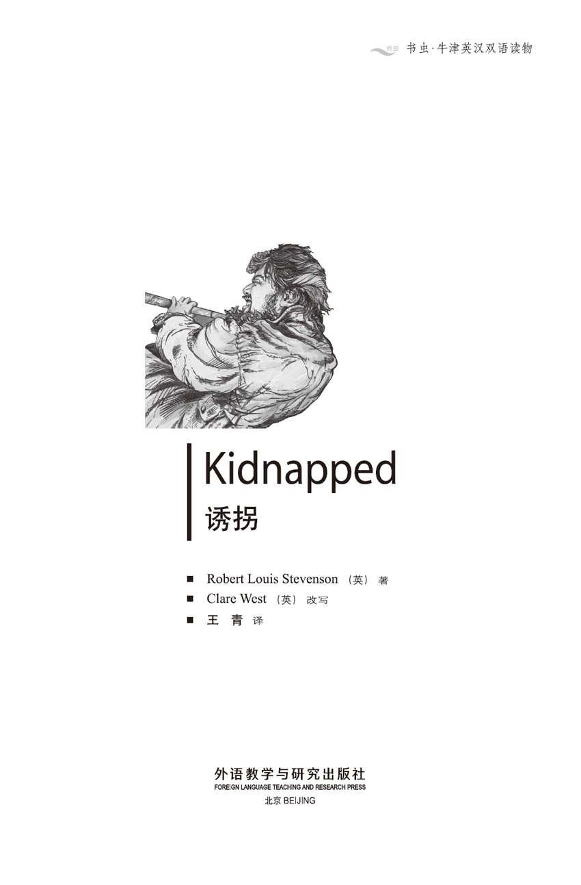
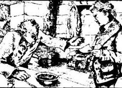
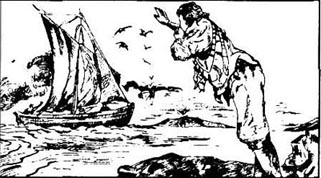
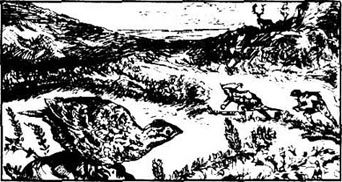
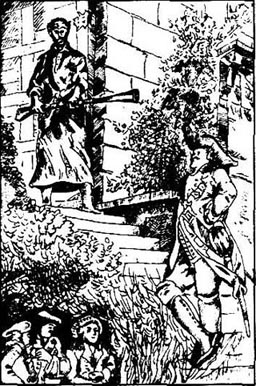
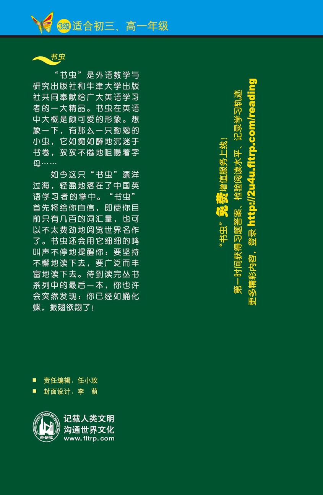

扉页

版权页
京权图字01-97-0340
Originally published by Oxford University Press, Great Clarendon Street, Oxford. © 1995
This edition is licensed for sale in the People's Republic of China only and not for export therefrom.
'Oxford' is a registered trademark of Oxford University Press.
只限中华人民共和国境内销售，不包括香港特别行政区、澳门特别行政区及台湾省。不得出口。
图书在版编目（CIP）数据
诱拐 = Kidnapped / （英）史蒂文森（Stevenson, R. L.）著；（英）韦斯特（West, C.）改写；王青译．—北京：外语教学与研究出版社，1998（2015.3 重印）
（书虫·牛津英汉双语读物）
ISBN 978-7-5600-1473-9
Ⅰ．诱… Ⅱ．①史…②韦…③王… Ⅲ．小说—英国—对照读物—英、汉 Ⅳ．H319.4：I
中国版本图书馆CIP数据核字（98）第19602号
出版人： 蔡剑峰
责任编辑：任小玫
封面设计：李 萌
出版发行：外语教学与研究出版社
社 址：北京市西三环北路19号（100089）
网 址:http://www.fltrp.com
版 次：1998年9月第1版
书 号：ISBN 978-7-5600-1473-9
* * *
凡侵权、盗版书籍线索，请联系我社法律事务部
举报电话：（010）88817519
电子邮箱：banquan@fltrp.com
法律顾问：立方律师事务所 刘旭东律师
中咨律师事务所 殷 斌律师
简介
简 介
1745年起，苏格兰步入了艰难的岁月。苏格兰高地人向英格兰乔治国王发动了战争，但失败了。乔治国王的部队把很多苏格兰高地人赶出了他们的家园。
来自苏格兰低地的戴维·鲍尔弗并不为英格兰部队而烦恼。当他离家去开始新生活时，他并没有预料到任何麻烦或危险。但是，麻烦很快接踵而至。他见到了他那很有钱的叔叔，但他叔叔获悉自己有这样一个穷侄子时一点儿也不高兴。危险一个接一个。戴维来到苏格兰高地，在那儿他遇见了艾伦·布雷克，一个骄傲的斯图尔特人。斯图尔特人既恨英格兰人，又恨效忠乔治国王的坎贝尔人，所以艾伦对于戴维来说是一个危险的朋友。
接着发生了一宗谋杀案。戴维和艾伦在荒山野岭上逃命……
罗伯特·路易斯·史蒂文森于1850年生于苏格兰的爱丁堡。他受训成为一名律师，但21岁时他下决心要当一名作家。他的最著名的作品有：《诱拐》、《金银岛》和《化身博士》。1894年他在萨摩亚岛与世长辞。
目录
1．David meets his uncle
1
David meets his uncle
It was early in the month of June, 1751, when I shut the door of our house behind me for the last time. All my life I had lived in the quiet little village of Essendean, in the Lowlands of Scotland, where my father had been the dominie, or schoolteacher. But now that he and my mother were both dead, I had to leave the house. The new dominie would soon arrive, and he would teach at the school and live in the dominie's house. So, although I was only seventeen, there was nowhere for me to live, and no reason for me to stay in Essendean.
But my heart was beating with excitement as I walked clown the road, because in my hand I carried the letter that my father had given me just before he died. 'Davie,' he had said. 'when I am dead, take this to the house of Shaws, near Cramond. That's where I came from, and that's where you must go. Put this letter into the hands of Ebenezer Balfour.'
Balfour! The same name as my own! It was the first time I had heard of any of our family outside Essendean.
So I decided to walk to Cramond, hoping that perhaps this Mr Balfour, in his fine big house, would receive me kindly. and help me to become a rich man one day. With my plaid over my shoulder, I walked fast up the hill away from the village. What an adventure, to leave that sleepy place, where nothing ever happened, and go to a great, busy house, to be with rich and important people of my own name and blood! But when I reached the top of the hill, I turned a little sadly, to take my last look at the dominie's house, and Essendean churchyard, where my father and mother lay.
My journey northwards took almost two days. By midday on the second day I could see the smoking chimneys of Edinburgh in front of me, and soon I arrived in Cramond.
Now I began to ask people on the road for the house of Shaws. Their answers worried me a little. Some people seemed surprised, some afraid, and some angry, when I spoke the name of Ebenezer Balfour. I could not understand this, but it was too far to go back to Essendean that day, and I wanted to find the rest of the Balfour family very much. So I continued on my way, and when I met a dark, wild-looking woman coming towards me, I asked her where the house of Shaws was. She took me to the top of the next hill, and showed me a large building standing alone in the bottom of the next valley. Although the fields around were green, and the farmland was excellent, the house itself looked unfinished and empty. Part of its roof was missing. There was no road to it, and no smoke coming from any of its chimneys, nor was there any garden.
'That!' I cried. 'No, it can't be!'
'It is!' cried the woman angrily. 'That is the house of Shaws! Blood built it, blood stopped the building of it, and blood shall bring it down! Black is the heart of Ebenezer Balfour! Ye can tell him from me that I hope to see him die, and his house fall down around him!'
The woman turned and disappeared. I stood where she left me, shaking like a leaf, and looking down at the house for a long time. But when it began to get dark, I noticed some smoke coming out of the chimney, and felt a little more hopeful. 'There must be a fire, and cooking, and people in the house,' I thought. So I walked up to the front door. The house seemed locked up and unwelcoming, but there was firelight shining through the kitchen window, and I could hear someone talking quietly to himself. Bravely, I lifted my hand and knocked loudly on the strong wooden door. The house was suddenly silent, and there was no reply. I knocked and knocked, and shouted as loudly as I could. Finally, the window opened, and a man holding a gun put his head out.
'What do ye want?' he asked.
'I've come here with a letter for Mr Ebenezer Balfour of Shaws. Is he here?'
'Who is it from?' asked the man with the gun.
'That's none of your business,' I replied, getting angry.
'Well, put the letter down by the door, and leave.'
'I will not!' I answered sharply. 'I'm going to give it to Mr Balfour himself. The letter introduces me to him.'
'Who are ye then?' was the next question.
'I'm not ashamed of my name. It's David Balfour.'
The man almost dropped his gun. After a long while, he asked in a changed voice, 'Is your father dead?' I was too surprised to answer, but he continued, 'Aye, he must be dead, and that's why ye have come. Well, man, I'll let ye in,' and he disappeared from the window.
Now the door was unlocked, and a voice from the darkness said, 'Go into the kitchen and touch nothing.' I obeyed, while the man locked the heavy door carefully again. I found myself in the emptiest kitchen that I had ever seen. There was a fire, but no other light. On the table was a bowl of porridge and a glass of water, in front of the only chair. Around the walls were several locked chests. There was no other furniture. The man who now appeared in the kitchen was small, mean-looking and white-faced, between fifty and seventy years old, and wearing a dirty old nightshirt. The worst thing about him was that he could neither take his eyes away from me, nor look straight into my face.
'If ye're hungry,' he said, 'ye can eat that porridge. It's grand food, porridge! Let me see the letter!'
'It's for Mr Balfour, not you,' I replied.
'And who do ye think I am? Give me Alexander's letter! Ye may not like me or my house or my porridge, but I'm your born uncle, Davie, my man!'
This was the end of all my hopes. I was too tired and miserable to speak, so I silently gave him the letter, and sat down to eat the porridge.
'Your father's been dead a long time?' he asked, giving me a quick look from his sharp eyes.
'Three weeks, sir,' I said.
'He was a secretive man, Alexander was. Perhaps he didn't talk much about me? Or about the house of Shaws?'
'I never knew he had a brother, sir, or ever heard the name of Shaws.'
'To think of that!' he replied. 'A strange man!' But he seemed very pleased, and began to look at me with more interest. Soon he jumped up and said, 'We're going to get on well, Davie! What's mine is yours, man, and what's yours is mine. Blood's thicker than water, and there's only ye and me of the name of Balfour. Now I'll show ye to your bed.'
He took me up some dark stairs and showed me into a room. I could not see anything.
'Can I have a light, sir?' I asked.
'No, ye can't. No lights in this house! I'm afraid of fires, ye see. Good night to ye, Davie, my man.' And before I had time to reply, he pulled the door shut and locked it from the outside. The room was very cold, but luckily I had my plaid with me, so I covered myself with it like a blanket, and soon fell asleep.
The next day my uncle and I had a small bowl of porridge and a glass of water for breakfast, lunch and supper. He did not speak much to me, but was clearly thinking hard. I often noticed him looking at me, while pretending to do something different, and he never left me alone in the kitchen with the locked chests, in which, I supposed, he kept his money. I did not like the way he looked at me, and began to wonder if he was a little crazy, and perhaps dangerous.
After supper he said suddenly, 'Davie, I've been thinking. I promised your father a bit of money for ye before ye were born. A promise is a promise — and so I'm going to give ye... forty pounds!' These last words seemed very painful to him. He added, in a kind of scream, 'Scots!'
A Scottish pound was the same as an English shilling. I could see that his story was a lie, so I laughed at him, saying, 'Oh, think again, sir! English pounds, surely!'
'That's what I said,' replied my uncle quickly. 'Go outside for a moment, and I'll get the money for ye.'
I was smiling as I went out, sure that he would give me nothing at all. It was a dark night, and I could hear wind in the hills. 'There may be thunder later,' I thought, not knowing how important the weather would be to me that night.
But when my uncle called me in again, he counted thirty-eight English pounds in gold into my hands. It clearly hurt him to do it, and he kept back the last two pounds, but I did not mind that. Surprised and pleased, I thanked him warmly.
'Now,' he said, looking cleverly at me, 'ye can give me something, Davie. I'm getting old now, and I need help.'
'Of course, sir,' I answered. 'What can I do?'
'Well, go outside and climb the stairs at the other end of the house, where the building isn't finished yet. Go up to the room at the top, and bring down the chest that ye'll find there. It's got valuable papers in it.'
'Can I have a light, sir?' I asked.
'No,' he said sharply. 'No lights in my house!'
'Very well, sir. Are the stairs good?'
'They're grand,' said he. 'The stairs are grand.'
Out I went into the night. As I was feeling my way along the outside wall, there was a sudden flash of lightning, then darkness again. I found the stairs and started climbing. I was about fifteen metres above the ground, when there was another flash of lightning. That was lucky for me, because it showed me that the steps were uneven, and that I could easily fall to my death. 'These are the grand stairs!' I thought. 'Perhaps my uncle wants me to die!' Now I was very careful, and I felt each step with my hands before I put my foot on it. A few steps later my hand felt cold stone, and then nothing more. The stairs ended there, twenty metres above the ground. I felt cold with fear, when I thought of the danger that I had been in. Sending a stranger up those stairs in the dark was sending him straight to his death.
Angrily, I turned and felt my way down. There was a crash of thunder, and suddenly the rain came down. At the bottom of the stairs I looked towards the kitchen, and could see, in the next flash of lightning, a figure standing still in the doorway, listening. When the thunder sounded again, louder than before, he ran back inside, and I followed as softly as I could. I found him sitting in the kitchen, drinking whisky straight from the bottle, and shaking with fear. Quietly I came up behind him, and, putting my hands suddenly on his shoulders, cried, 'Ah!'
My uncle gave a kind of broken cry, and fell to the floor like a dead man. His face was a strange blue colour, and I began to think that he really was dead. At last his eyes opened, and he looked up and saw me. 'Oh man, are ye alive or a ghost?' he cried. 'Get me my medicine, Davie—it's for my heart.' I found the medicine bottle and gave him some. He soon began to look a little better.
'Why did you lie to me?' I asked angrily. 'Why did you give me money? And why did you try to kill me? Answer me!'
'I'll tell ye tomorrow, Davie, I promise. Help me to bed now, will ye?' He still looked very ill, so I could not refuse. But this time I locked his bedroom door, and went to sleep in front of the kitchen fire.
When I woke up in the morning, I felt very pleased with myself. 'He thinks he's cleverer than me, but he isn't!' I thought. When I let my uncle out of his room, I asked him again for an explanation. After a while, he said, 'Davie, I have some business with a ship's captain at Queensferry. Now, we could walk over there, and when I've done my business, we could visit the lawyer, Mr Rankeillor. He'll answer all your questions. He's an honest man, and he knew your father. What do ye say to that?'
I thought for a moment. I had never seen the sea, but had always wanted to! 'It's a grand idea,' I said.
It was a morning's walk to Queensferry, which was west of Edinburgh, but we did not say a word to each other on the way. Suddenly, at the top of a hill, we could see the Firth of Forth below us, blue and calm, with white sails on it.
'Ye see that public house?' asked my uncle. 'Captain Hoseason's there, to do business with me. There's the ship's boat on the beach, waiting to take him to the ship. And there's the ship itself! A grand ship!'
I had to agree with him. The sailors were getting the ship ready for sailing, and I thought what an exciting adventure that would be — to sail away to a foreign country.
We walked down the hill to the public house and met the captain there. He was a tall, dark, serious-looking man, who shook hands politely with me. Stupidly, I left these two men to their business, and ran down to the beach, to talk to the sailors and look at the boats. It was all new and very interesting to me.
As I was coming back, I met the owner of the public house.
'Good morning,' he said. 'Did ye come with Ebenezer?'
'I did,' I replied. 'He isn't well liked, I understand.'
'That's true,' he answered. 'Nobody speaks well of him. It all started with that story about Mr Alexander, his brother.
'What story?' I asked.
'Oh, just that Ebenezer had killed him. Did ye never hear that?'
'And why would he kill my f —, I mean, Alexander?'
'To get the house, of course, the house of Shaws.'
'Aye, man? Was my — was Alexander older than Ebenezer?'
'Indeed he was! No other reason for killing him!'
This was a great surprise to me! I had thought that my father was the younger brother, and now I understood why my uncle had lied to me, and wanted to kill me. The house of Shaws had belonged to my father, not my uncle, and now I had inherited it. The poor country boy who had walked from Essendean was the owner of a fine house and farmland! My head was full of the wonderful things that I could do in my life, as I looked, unseeing, at the sea.
Just then my uncle and the captain came out of the public house. The captain smiled in a friendly way as he spoke to me. 'Sir,' he said, 'Mr Balfour has told me a lot about ye. I'm only sorry I haven't time to get to know ye better. But I'd like ye to come on to my ship for half an hour, before we sail, and have a drink with me.'
Now, more than anything in the world, I wanted to see the inside of a ship, but I remembered that I had to be careful. 'My uncle and I have to see the lawyer, sir,' I replied, 'so I'm afraid we may not have enough time.'
'Aye, aye,' he answered, 'I know, but ye see, the ship's boat can put ye both down near Rankeillor's house, after ye've seen the ship, so ye won't lose any time.' Suddenly he said quietly in my ear, 'Watch out for the old man — he wants to hurt ye. Come and talk about it.' Putting his arm in mine, he said loudly, 'What can I bring ye back from my travels? A friend of Mr Balfour's is a friend of mine!'
By this time we were on the beach, and he was helping my uncle and me into the boat. I thought that I had found a good friend and helper, and I was very excited as we came closer to the great ship, full of busy, noisy sailors. The captain and I were the first to climb up the ship's side, and at the top the captain immediately put his arm through mine and began to talk about the ship.
'But where is my uncle?' I asked suddenly. I pulled myself away from the captain's arm, and ran to the side of the ship. Sure enough, there was the boat returning to Queensferry, with my uncle sitting in it. I screamed, 'Help, help! Murder!' and my uncle slowly turned to look at me.
I did not see any more. Already strong hands were pulling me away. Then something hit my head; I saw a great flash of fire, and fell to the ground.
Lowlands n. the low lands of Scotland. 苏格兰低地。
dominie n. (Scot) school teacher.（苏格兰语）教师
Davie n. David 的昵称形式。
hear of have knowledge of. 听说
adventure n. strange or unusual happening, esp. exciting or dangerous journey or activity. 冒险。
sleepy adj. needing, ready for sleep. 想睡的，瞌睡的，嗜眠的。
chimney n. structure by which smoke from a fire is carried away through the wall or roof of a building. 烟囱。
alone adv. by oneself. 单独地，独自。
valley n. stretch of land between hills or mountains, often with a river flowing through it. 山谷
fall down come or go down freely. 倒塌。
disappear v. go out of sight, be seen no more. 消失。
firelight n. 炉火光。
porridge n. gruel. 粥。
chest n. box, case. 箱子，柜子，盒子。
mean-looking adj. selfish. 卑鄙的，自私的。
nightshirt n. pajamas. 男用长睡衣。
miserable adj. uncomfortable 难受的。
secretive adj. tending to hide one's thoughts, feelings, intentions. 遮遮掩掩的，守口如瓶的。
stairs n. 楼梯，梯子。
blanket n. rug. 毯子，毛毡。
fall asleep 睡着了。
pound n. unit of English money. 英镑。
sharply adv. severely. 厉声地。
uneven adj. not steady or balanced. 不平的。
fall to one's death 摔死。
stranger n. 陌生人。
thunder n. 雷，雷声。
still adj. motionless. 静止的，不动的。
whisky n. 威士忌酒。
ghost n. spirit. 鬼，幽灵。
lie v. make a statement that one knows to be untrue. 撒谎。
captain n. ship master. 船长。
firth n. harbor. 港湾。
sail n. sheet spread to catch the wind and move a boat or ship forward. 帆。
public house n. inn, pub 小旅馆，客栈，（英）小酒店。
inherit v. carry on, succeed. 继承。
unseeing adj. 不注意的，视而不见的。
beach n. foreshore 海滩。
side n. shipboard. 舷侧。
戴维见到了叔叔
1 戴维见到了叔叔
我最后一次关上身后我们家的那扇门时，那正是1751年6月初的某一天。我一直生活在苏格兰低地的埃森丁这个安静的小村庄里。我的父亲曾经是那儿的教师。但既然他和我的母亲都去世了，我就不得不离开那幢房子。因为新教师很快就要到了，他将在学校里教课并住在供教师住的房子里。所以说，虽然我只有17岁，但已经没有我的栖身之地了，我也没有理由待在埃森丁了。
走在路上时，我的心激烈地跳动着，因为我手中拿着父亲临终前给我的那封信。“戴维，”父亲当时对我说，“我去世以后，拿着这封信去克莱蒙德附近的肖斯庄园。那儿是我的出生地，也是你应该去的地方。把这封信亲手交给埃比尼泽·鲍尔弗。”

鲍尔弗！和我一样的姓氏！这是我第一次听说埃森丁以外的地方还有我的家族成员。
于是我决定到克莱蒙德去，盼着有一天这个鲍尔弗先生能在他的豪华的大房子里友好地接待我并把我变成富人。披着方格肩巾，我大步流星地走上山岗，离开了那个小村庄。离开那寂静的、从未发生过什么事的小村庄而去一个热闹的大宅院里，与姓氏和血缘和我相同的、有钱有势的人待在一起，这可真是一次历险！但当我到达山顶时，我带着一丝悲哀转身看了最后一眼我们住过的房子，和我父母长眠着的埃森丁墓地。
我往北差不多走了两天。第二天中午时，我已经能看见前方爱丁堡冒烟的烟囱了，很快我就到了克莱蒙德。
我开始向路上的行人打听肖斯庄园。他们的回答使我心里有点儿担忧。当我说出埃比尼泽·鲍尔弗这个名字时，一些人显得惊讶，一些人恐惧，一些人愤怒。我不明白这是为什么，但那天回埃森丁是太远了，而且我也特别想找到鲍尔弗家族其余的人。于是我继续走着。当我看见一位皮肤黝黑、看似野蛮的女人向我走过来时，我向她打听肖斯庄园在哪儿。她把我领到下一座小山的顶峰，指给我看临近山谷里的一幢孤零零的建筑物。虽然四周的田野一片葱绿，庄稼长势很好，但那幢房子本身好像没有建完，也显得空旷。有部分屋顶不见了。没有路通到那儿，烟囱里没有烟冒出来，也没有花园。
“那个？！”我惊呼着，“不，绝对不是！”
“就是！”那个女人愤恨地说道，“那就是肖斯庄园！它是用血筑成的，血停止了修建，血还将把它给毁掉！埃比尼泽·鲍尔弗的心是黑的！你可以告诉他我说我希望看到他死了，并看到他的房子塌下来把他给埋了！”
那个女人转身不见了。我站在她离开我的地方，像一片树叶一样颤抖着，久久地俯视着那幢房子。但当暮色开始降临时，我发现有烟从那幢房子的烟囱冒出来，便感到稍微有点希望了。“那里面一定有火，有人在做饭，也一定有人。”我心想。于是我走到前门。房子似乎紧锁着，不欢迎来访者的样子，但是厨房的窗口透着火光，而且我能听到屋里有人悄声自言自语。我鼓起勇气举起手来，在那扇结实的木门上大声地敲起来。屋子里忽然间静了下来，没有人回答。我敲了又敲，还使劲地喊起来。最后，窗户开了，一个手握一枝枪的男人探出头来。
“你想干什么？”他问道。
“我带来一封给埃比尼泽·鲍尔弗·肖先生的信。他在吗？”
“谁给他的？”持枪的男人问道。
“那与你无关。”我答道，变得生气了。
“好吧，把信放到门边，然后离开。”
“不行！”我厉声答道，“我要把信交给鲍尔弗先生本人。这封信会让他认识我。”
“那么，你是谁？”他又问道。
“我才不为我自己的名字而感到害臊呢。我叫戴维·鲍尔弗。”
那个人的枪差点儿掉了下来。过了好一阵子，他才变了腔调问道：“你父亲去世了吗？”我因太惊讶了而回答不出来，但他继续道：“对，他一定是死了，那也是你来的原因。好吧，伙计，我会让你进来。”说着，他就从窗户那儿消失了。
门打开了，黑暗中有个声音说道：“到厨房来，不准碰任何东西。”我照着他说的做了，与此同时，那个男人小心翼翼地又把那扇沉重的门锁上了。我发现自己站在我所见过的最空荡荡的厨房里。除了一堆火外再没有别的光线了。唯一的一把椅子前的桌子上面放着一碗粥和一杯水。墙的四周摆放着几个锁着的柜子。除此以外，没有别的什么家具。那个男人身材矮小，形象猥琐，脸色苍白，年龄约在五十岁到七十岁之间，穿着一件脏兮兮的旧睡衣。最糟糕的是他既不把视线从我身上移开，也不直视我的脸。
“如果你饿了，”他说道，“你可以喝那碗粥。粥，可是好东西！让我看看信！”
“信是给鲍尔弗先生的，不是给你的，”我说道。
“那么你以为我是谁啊？把亚历山大的信给我！你可能不喜欢我、不喜欢我的房子或者不喜欢我的粥，但我是你的亲伯伯，戴维，我的伙计！”
我所有的希望都破灭了。我因太劳累、太难受而什么话也说不出来，于是默默地把信交给他并坐下来喝粥。
“你父亲死了很久了？”他一边问，一边用他那双厉害的眼睛飞快地扫视我。
“三周了，先生，”我说。
“他是个爱遮遮掩掩的人，亚历山大就是这样。也许他没有怎么说起过我？或说起过肖家这房子？”
“我从不知道他有一个兄弟，先生，也没听说过肖这个名字。”
“想想看！”他回答道，“真是一个奇怪的人！”但是他看起来很高兴，并且也开始更饶有兴趣地打量着我。不一会儿他跳起身来，说道：“我们将会合得来的，戴维！我的就是你的，伙计，你的也是我的。血浓于水，鲍尔弗家只有你和我两个人了。现在我带你到睡觉的地方去。”
他带着我上了黑黝黝的楼梯，把我带到一个房间里。我什么也看不到。
“我能有盏灯吗，先生？”我问道。
“不，你不能。这房子里不准有灯！你知道，我怕火。晚安，戴维，我的伙计。”我还没有来得及回答，他已把门关上并从外面锁上了。房间里很冷，但幸运的是我随身带着肩巾，于是我用它像用毯子一样地把自己盖起来，很快我便睡着了。
第二天早、中、晚饭我和我的叔叔都只喝了一小碗粥和一杯水。他对我讲话不多，但很明显地他在使劲想什么。我经常注意到他一边假装干别的事一边看我，他也从来没有让我一个人单独待在放有锁着的柜子的厨房里。我想他一定在里面放了钱。我不喜欢他看我的那种样子，开始想他是不是有点神经不正常，而且或许是个危险人物。
吃过晚饭他突然说：“戴维，我一直在思考？你出生前我曾答应过你父亲给你一点钱。承诺就是承诺——我现在要给你……40镑！”最后的话语对他来说显得非常痛苦。他用一种尖叫的声音补充道：“苏格兰镑！”
一个苏格兰镑相当于一个英格兰先令。我能看得出他在说谎，于是我嘲笑他，说：“噢，再想想，先生！是英镑，确定无疑！”
“那正是我说的。”我叔叔很快答道，“出去一会儿，我给你拿钱。”
我微笑着出去了，我敢肯定他什么也不会给我。夜晚天黑黑的，我能听到山野里的风声。“之后可能会打雷，”我想，不知道那晚的天气对我来说将是何等重要。
但当我叔叔把我又叫进去时，他将38英镑的金币数着放在我的手里。显然他是不情愿那么做的，他扣了最后两个英镑，但是我没有在意。我又惊又喜，热烈地感谢他。
“那么，”他狡黠地看着我说道，“你可以给我一些东西，戴维。我现在变老了，我需要帮助。”
“当然可以，先生，”我回答道，“我能做什么？”
“好的，出去，爬上在那个还未建完的房子的另一端的楼梯。爬到位于房子的顶层的房间去，把你在那儿发现的柜子拿下来。里面有重要的文件。”
“我能点盏灯吗，先生？”我问道。
“不，”他厉声说道，“我的房子里不能点灯！”
“好吧，先生。楼梯是好的吗？”
“好的，”他说，“楼梯是好的。”
我走进夜色中。我沿着外墙摸索着时，一道闪电忽然闪过，紧接着又是黑黝黝的。我找到了楼梯并且开始爬起来。我已离地大约十五米高，这时又有一道闪电闪过。那对我来说是幸运的，因为它向我表明楼梯是不平的，我很容易摔死。“这就是不错的楼梯！”我想道，“我伯伯可能想让我死掉！”现在我很当心起来，踩每一脚前都用手仔细地摸摸踏脚处。又爬了几步之后，我的手碰到了冰冷的石头，然后再也没有东西了。楼梯到头了，离地20米高。我一想起我所处的险境就害怕得直发冷。让一个陌生人在黑暗中上那楼梯，就是把他直接送到死神面前。
我气呼呼地掉转过头，摸索着往下爬。雷电轰鸣，忽然间下起雨来。我站在楼梯的底端往厨房看，借助下一道闪电的光亮看见一个人静静地站在门口倾听着。当雷声又响起而且雷声大过以前时，他跑回里面，我尽可能悄悄地跟着他。我发现他坐在厨房里，直接用酒瓶喝着威士忌，身体因害怕而在发抖。我轻轻地从他身后走上前去，忽然间把手放到他的肩上，大声叫道：“啊！”
我叔叔急促地尖叫起来并摔倒在地上，像一个死人一样。他的脸色显现出一种奇怪的蓝色，我开始琢磨他是不是真的死了。最后他的双眼睁开了，他抬起头看着我。“噢，伙计，你到底是活着还是个幽灵？”他叫道，“把我的药给我，戴维——治心脏病的那种。”我找到药瓶，给了他一些药。他很快就开始看着好一点了。
“你为什么对我扯谎？”我生气地问道。“你为什么给我钱？你为什么还想杀死我？回答我！”
“明天我会告诉你的，戴维，我发誓。现在帮忙把我扶到床上，行吗？”他看起来仍病得很厉害，所以我不能拒绝。但这一次我锁上了他的卧室的门，然后在厨房的炉火前睡了。
第二天早晨当我醒来时，我对自己感到很高兴。“他以为他比我聪明，但他不是！”我想。当我把我叔叔放出房间时，我又要他解释一下。过了一会儿，他说道：“戴维，我和昆斯费里的一个船长有笔生意。现在我们走到那儿去，我做完生意时我们可以拜访一下律师兰基勒先生。他将解答你所有的问题。他是一个诚实的人，他认识你父亲。那么做你意下如何？”
我想了一下。我从未见过大海，但一直想见！“是个好主意。”我说道。
昆斯费里位于爱丁堡西侧，我们走了一上午才到，但一路上我们彼此没有说话。突然，在山顶上，我们看见了下面的福斯湾，湛蓝湛蓝的，风平浪静，白帆点点。
“你看见了那个小酒店吗？”我叔叔问道，“霍齐亚森船长在那儿，要和我做生意。海滩上有船上的小艇，等着把他带到船上去。就是那条船！一条大船！”
我不得不表示同意。水手们正在收拾那条船以备远航。我想远航去一个遥远的国度将是一次多么激动人心的历险啊。
我们走下山到了小酒店，在那儿见到了船长。他是个大高个儿，皮肤黝黑，表情严肃。他有礼貌地和我握握手。我傻乎乎地让这两个人去谈生意，自己跑到海滩上去和水手们聊天并去看那些小艇。这对我来说都是新鲜事，让人很感兴趣。
我正往回走时，遇到了小酒店的主人。
“早晨好。”他说道，“你是和埃比尼泽一块儿来的吗？”
“是的，”我回答道，“他不招人喜欢，我明白。”
“那是真的。”他回答道，“没有人说他好话。这得从他兄弟亚历山大的故事说起。”
“什么故事？”我问道。
“噢，就是埃比尼泽杀害了他。你从未听说过那事吗？”
“他为什么要杀我父——我是说，亚历山大？”
“当然是为了房子，肖斯庄园。”
“伙计，什么？难道我的——亚历山大比埃比尼泽年长吗？”
“他就是！杀他再也没有别的原因了！”
这对我来说真是件惊奇事！我过去一直以为我父亲是年幼的弟弟，现在我明白了为什么我的叔叔对我扯了谎而且要杀死我。肖斯庄园本来属于我父亲，不是我叔叔的，现在我继承了它。从埃森丁走出来的可怜的乡下男孩成了大房子和农场的主人！我视而不见地望着大海，脑袋里全是我想像的、我这一辈子可能干的美妙的事儿。
正在那时，我叔叔和船长从小酒店出来。船长边跟我说话边友好地冲我微笑。“先生，”他说道，“鲍尔弗先生告诉了我很多关于你的事。我只是感到有点遗憾，没有足够的时间来更好地了解你。但是我想请你在我们开航前到我船上来半小时并和我喝上一杯。”
现在，在这个世界上我最想做的就是去看看船的内部构造，但是我记着我得小心。“我和我叔叔得去见律师，先生，”我答道，“所以恐怕我们可能没有足够的时间。”
“对，对，”他回答道，“我知道，但是你明白，船上的小艇能够在你们看完之后让你们二人在兰基勒家附近的地方下船，所以你不会没时间的。”忽然间他对我轻声耳语道：“当心这个老家伙——他想害你。来谈谈。”他挽着我的臂，大声说：“我旅行回来给你带什么？鲍尔弗先生的朋友也是我的朋友！”
到这时我们已在海滩上，他帮着我和叔叔进了小艇。我心想我找到了一个好朋友，一个可以帮忙的人；而且当我们走近到处是忙忙碌碌、吵吵嚷嚷的水手的大船时，我心里很激动。我和船长率先爬过船舷，在顶上船长立即用臂挽住我，开始谈起船来。
“可我叔叔在哪儿？”我忽然间问道。我挣脱开船长挽我的胳膊，跑到船舷。千真万确，一艘小艇正驶回昆斯费里，我叔叔就坐在里边。我尖叫道：“救命，救命！有人要杀我！”而我叔叔慢慢地回头看看我。
我再没看见什么。强有力的手已把我拖开了。接着什么东西打了我的头；我眼冒金星，接着倒在地上。
2．Kidnapped!
2
Kidnapped!
When I woke up in darkness, my head was hurting badly, and I was unable to move my hands or feet. I could hear the sailors' shouts and the sound of the wind and the waves. The whole world seemed to go up, up, up, and then down again. I felt very ill, and at first could not understand what was happening. After a while 1 realized that I must be somewhere inside the ship, which was moving very fast through the water. 'I've been kidnapped!' I thought angrily. It was clear that my uncle and the captain had planned it together. I began to feel frightened and hopeless, as I lay there in the dark.
Some hours later, a light shone in my face. Mr Riach, one of the ship's officers, stood looking down at me. He washed the cut on my head, gave me some water, and told me kindly to go to sleep. The next time he came, I was feeling very hot and ill. He had brought Captain Hoseason with him.
'Now, sir, see for yourself,' said Mr Riach. 'The lad's seriously ill. We must take him out of this unhealthy hole at once.'
'That's none of your business,' answered the captain. 'Ye're paid to do your job, not to worry about the boy. He's staying down here.'
'I'm only paid to be an officer on this ship,' replied Mr Riach sharply. He looked hard at the captain. 'I'm not paid, like you, to kidnap and murder —'
Hoseason turned on him angrily. 'What did ye say?' he cried. 'What do ye mean?'
'You understand,' said Mr Riach, looking calmly at him.
'You should know me by now, Mr Riach. I'm a hard man. But if ye say the lad will die —'
'Aye, he will!' said Mr Riach.
'Well, sir, put him where ye like!'
So I was carried up into the sunlight a few minutes later, and put in a cabin where some of the sailors were sleeping. It was a wonderful feeling to see the daylight and to be able to talk to people again. I lay in the cabin for several days, and after a while began to feel better. The sailors were kind to me in their way. They brought me food and drink, and told me about their families at home. I discovered from them that the ship was sailing to the Carolinas, in North America. There the captain was planning to sell me as a slave, to work in a rich man's house or on a farm.
I also learnt that both the ship's officers, Mr Riach and Mr Shuan, enjoyed drinking far too much. The sailors liked Mr Shuan, but said that he was sometimes violent when he had drunk a lot. One of the sailors was a young boy, called Ransome. His job was to bring meals to the captain and officers in the round-house, a big cabin on the top of the ship, where the officers slept and ate. When Ransome dropped something or did something wrong, Mr Shuan used to hit him, and I often saw the poor boy crying.
One night, about nine o'clock, I heard one of the sailors in the cabin saying quietly to the others, 'Shuan's killed him at last!' We all knew who he meant. Just then the captain came in. I was surprised to see him walk towards me and say kindly, 'My man, we want ye to help us in the round-house. From now on, ye'll sleep there instead of Ransome.' As he spoke, two sailors carried Ransome into the cabin. His face was as white as a sheer, and he did not move. My blood ran cold when I saw him.
I obeyed the captain, and ran to the round-house. It was a large room, with a table, a bench and locked cupboards. All the best food and drink was kept there, under the captain's eyes, as well as the guns. When I entered, I saw Mr Shuan sitting at the table, with a bottle of whisky in front of him. He did not seem to notice what was happening around him, and was looking fixedly at the table.
Mr Riach soon joined the captain and me. He looked at Hoseason meaningfully, and I understood from his look that Ransome was dead. We three all stood silently looking down at Mr Shuan.
Suddenly the captain stepped forward. 'Do ye know what ye've done?' he cried. 'Ye've murdered the boy!'
Mr Shuan put a hand to his head. 'Well,' he said, 'he brought me a dirty glass!'
The captain and Mr Riach and I looked at each other, almost frightened. Then Hoseason took Mr Shuan by the arm, and told him to go to bed. The murderer cried a little at first, but he took off his boots and lay down, like a small child.
'Mr Riach,' said the captain, when we could see that Mr Shuan was asleep, 'nobody on land must know what happened tonight. We'll say that the boy fell into the sea. Get us a drink, David, we both need one,' and he gave me the key to the cupboards.
In the next few days I was very busy, running here and there with the officers' food and drink. Mr Riach and the captain were surprisingly patient with me when I made mistakes. Perhaps they were thinking of the poor boy who had died. But Mr Shuan was very strange after Ransome's death. He did not seem to know what he had done, or to recognize me. On my second day in the round-house, he looked at me with a white face and fear in his eyes. 'You weren't here before?' he asked.
'No, sir,' I replied.
'There was another boy?' he asked. 'Ah! Yes, I thought so,' and sitting down, he called for some more whisky.
It wasn't a hard life for me. I was able to eat well, and talk to Mr Riach, who spoke to me like a friend. But I could not forget poor Ransome. As the days passed, I became more and more worried. I knew that, when the ship arrived in the Carolinas, I would no longer be a free man, but a slave. I thought hard, but there did not seem to be any way of escaping.
About a week later, we were sailing round the rocky coast of northern Scotland in very bad weather. It was difficult to see anything because of the thick fog. One evening there was a great crash, and the officers ran out to see what had happened. I thought we had hit a rock, but in fact it was a small boat. As we watched, the boat broke in two, and went to the bottom with all its. men, except the one passenger. At the moment of the crash, this man managed to jump up and catch the side of the ship and pull himself up.
The captain brought him into the round-house. He was smallish but well-built, with an open, sunburnt face, and bright, amused eyes. When he took off his long coat, I could see that he had a pair of pistols and was wearing a sword at his side. Although his life had clearly been in great danger, he seemed very calm, and spoke politely to the captain. Hoseason was looking with interest at the man's clothes. He was wearing a hat with feathers, a blue coat with silver buttons, and expensive-looking lace round his neck.
'I'm sorry about the boat, sir,' said the captain.
'I've lost some grand friends today,' replied the stranger, 'and that's worse than losing ten boats.'
'Well, sir, there are more men in the world than boats,' replied the captain, still watching him closely. 'I know, because I've been in France, like you.'
He said these last words clearly and carefully. They seemed to have a special meaning. The stranger put his hand quickly on his pistol.
'Don't worry,' said Hoseason. 'Ye've a French soldier's coat on your back and a Scottish tongue in your head, that's true, but so has many an honest man these days.'
'Well, sir,' replied the stranger, 'I must tell you that I'm one of those honest High Landers who were proud to fight for their homes, their clan and their country in 1745, against the English King. And I must tell you another thing. If King George's soldiers find me, I'll be in trouble. I was on my way to France, where some of my clansmen live now. But in the fog my boat missed the French ship that was meeting me. So if you can take me to France, I'll pay you well.'
He opened his purse and showed that it was full of gold coins. The captain seemed excited as he looked at the money, and then at the man's face.
'To France?' he replied. 'No, I can't do that. But to the Highlands, aye, we can discuss that.' They sat down together, and in the end agreed that the captain would take the stranger to Loch Linnhe, on the northwest coast of Scot land, for sixty pounds. There the Highlander would be among friends, and safe from the English army. He and Hoseason shook hands, and the captain left me alone with the stranger.
He had told the captain that the gold was not his own. Some of the Highlanders had escaped to France after the Forty-Five, but their friends and clansmen in Scotland sometimes managed to find a little money to send them. It was this man's job to take the money across to France, and he did this by travelling secretly to Scotland as often as possible. I thought he was very brave. 'If he's caught by the English army, they'll kill him!' I told myself. I liked the way he seemed to enjoy living dangerously.
When he asked me for whisky, I had to go to ask the captain for the key to the cupboard. I found Hoseason and his officers talking quietly in a corner, and heard them planning to kill the stranger and steal his money. They seemed to think that I would help them, and asked me to bring them secretly some guns from the round-house. I went slowly back to the stranger, not sure what I should do. But when I entered the round-house, and saw him eating his supper, I decided at once.
'They're going to attack you, and murder you!' I told him.
'What?!' he cried, jumping up. 'Will ye stand with me, against them?'
'I will! I'm no thief or murderer!' I replied bravely.
'Are ye for King George?'
'More or less,' I answered.
'Well, Mr More-or-Less, what's your name?'
'David Balfour,' I said, and then, thinking that a man with so fine a coat must like fine people, I added, 'of Shaws.'
'My name is Stewart,' he said proudly. 'Alan Breck, they call me. And Stewart is a king's name, so it's good enough for me, although I have no name of a farmhouse to add to it.' He looked around him. 'Now, David, I'll take any man who comes in through this door. You must watch the window, and the door behind me, and shoot anyone who tries to enter.'
He gave me a pistol. I was very frightened, but tried hard not to show it. The ship seemed very quiet. Suddenly there was the sound of running feet, and a shout, and then I heard fighting in the doorway. I looked over my shoulder, and saw Mr Shuan, just as Alan drove his sword into the officer's body. Then several men ran at my door. I did not want to hurt them, but it was now or never. I lifted my pistol and shot at them. One man fell, and the others ran away. After a few moments, the sailors attacked again. Alan fought as bravely as before, his sword now red with blood. He was clearly enjoying himself. I had no time to think, but when two more men appeared at the window, I shot them too. Now there were several bodies on the floor, and blood everywhere.
Suddenly I realized that we had won, and that the danger was over. Alan was driving the men out of the round-house like sheep. When he returned, he took me in his arms.
'David!' he cried. 'I love ye like a brother. And oh, man, am I not a grand fighter?' I had to agree. He took a knife from the table and cut a silver button off his blue coat. 'Take this, David. The buttons come from my father, Duncan Stewart. Where ye show that button, the friends of Alan Breck will come to ye.' He spoke as proudly as a king, and I tried not to smile.
We slept in the round-house, one of us keeping watch all night, and the next morning the captain came to speak to us. 'Ye've won the fight, sir,' he said to Alan. 'We're sailing through the Little Minch now, and I'll keep my promise to take ye to Loch Linnhe. But ye've killed my chief officer, Shuan, and without him I can't find my way safely round these rocky coasts. We'll go round the island of Mull, but I warn ye, it'll be dangerous.'
Hoseason was right to be worried. All that day Alan and I sat in the round-house and told each other the stories of our lives, but by night the wind was growing stronger and the sailors found it hard to keep the ship away from the dangerous rocks. As we came round Earraid, a small island close to the larger island of Mull, there was a sudden, terrible crash, and we realized that the ship had hit a rock. There was only one thing to do—leave the ship and try to reach land in the ship's boat. But as we were climbing down into the boat, a great wave hit the ship and knocked some of us into the sea.
I went down and came up again several times. Then, luckily, I managed to find a piece of wood, which helped me to stay up in the water. I looked round, but could not see Alan, or any of the sailors, or the boat. My only hope was to try to swim to Earraid, which I could see, not far away, in the moonlight. It was hard, tiring work, but I reached it, and was very grateful to step on to dry land at last.
kidnap v. carry away by force and unlawfully. 诱拐。
wave n. 波，波浪，波涛。
plan v. plot beforehand. 预谋。
cabin n. a room in a ship used as living quarters by an officer or a passenger. 船舱。
violent adj. 粗野的，残暴的。
round-house n. 后甲板室。
cupboard n. cabinet. 食柜，碗橱。
fixedly adv. unmovingly. 固定地，凝视地。
meaningfully adv. significantly. 意味深长地，富有意义地。
patient adj. 有耐心的，容忍的。
escape v. run away. 逃跑。
thick fog 浓雾。
smallish adj. 有点小的。
sunburnt adj. darkening of the skin caused by the sun 晒黑的。
amused adj. 逗乐的，逗笑的。
pistol n. small firearm held and fired in one hand. 手枪。
sword n. 剑。
lace n. decorative border. 花边，饰带，编带。
Highlander n. 苏格兰高地人。
clan n. large family group, as found in tribal communities, esp. Scottish Highlanders with a common ancestor. 部族（尤其是苏格兰高地人的部族）。
clansman n. 氏族（或部落）的人。
purse n. wallet. 钱包。
dangerously adv. riskily. 危险地。
for prep. 赞成，拥护。
shoot v. fire. 射击。
silver adj. 银的。
button n. 纽扣。
keep one's promise 信守诺言。
grateful adj. 感激的，愉快的。
诱拐！
2 诱拐！
我在黑暗中醒过来时，头疼得很厉害，手脚也动不了。我能听到水手们的叫声、风声和涛声。整个世界似乎在上升、上升，然后又下降了。我感到病得很厉害，最初搞不清发生了什么事。过了一会儿，我意识到自己一定是在船里某处，而那船正在水中快速行驶着。“我被诱拐了！”我气愤地想。显然我叔叔和船长合伙预谋了这一切。我黑暗中躺在那儿时，开始感到害怕和无望。

几个小时之后，有一束光照到我脸上。船上的一名叫里亚奇先生的高级船员站在那儿俯视着我。他擦洗了我头上的伤口，给我一些水，并和蔼地让我睡觉，下一次他来时，我正周身发热，生病了。他把霍齐亚森船长也带来了。
“好，船长，你自己看看，”里亚奇先生说道，“这个小伙子病得很厉害。我们得立刻把他带出这个不卫生的牢房。”
“那与你无关。”船长回答道，“给你付钱是让你干你的工作，不要为这男孩操心。他得待在这儿。”
“我只是受雇来当船上的高级船员。”里亚奇先生厉声答道。他盯着船长。“我不是收了钱，像你一样来诱拐和谋杀——”
霍齐亚森恼怒地反击里亚奇。“你说什么？”他叫道，“你是什么意思？”
“你明白。”里亚奇先生说道，平静地看着他。
“到现在你也应该了解我了，里亚奇先生。我可不是一个软弱的人。但如果你说这个小伙子将要死掉的话——”
“对，他要死了！”里亚奇先生说道。
“好吧，先生，把他放在你想要放的地方！”
于是几分钟后，我被人抬到上面阳光能照到之处，并被安置在一个船舱里，里面有一些水手正在睡觉。又能看见阳光、又能和人交谈是一种很好的感觉。我在机舱里躺了几天，不久之后开始感到好些了。水手们以自己的方式善待我。他们给我带来吃的、喝的，并给我讲他们家的事。从他们那儿我得知船正驶往北美洲的卡罗来纳。船长打算在那儿把我当奴隶卖掉，卖到一个有钱人家或一家农场。
我也了解到船上的高级船员里亚奇先生和舒安先生都酗酒。船员们喜欢舒安先生，但说舒安先生有时喝得太多时很凶。有一个水手是一个年轻的小男孩，名叫兰塞姆。他的工作是给后甲板室（即船顶上的一个大舱）里的船长和高级船员送饭。高级船员吃住都在后甲板室里。当兰塞姆掉了东西或做错了事时，舒安先生时常揍他，我也经常看见这个可怜的小男孩哭泣。
一天晚上，约莫九点钟，我听见机舱里有位水手悄悄地对别的水手们说：“舒安到底杀了他！”我们大家都明白他指的是谁。正在那时船长进来了。我很吃惊地看见他走向我，和蔼地对我说：“小伙子，我们需要你到后甲板室给我们帮忙。从现在起，你就代替兰塞姆睡在那儿。”当他说话时，两名水手把兰塞姆抬进机舱。他的脸和纸一样白，并且他不动弹。我看见他时，被吓得浑身发冷。
我遵从船长的话，跑到后甲板室。后甲板室很大，有一张桌子、一个凳子和一些上锁的小橱子。最好的食品和饮料都放在那儿，就在船长的眼皮底下，枪支也放在那儿。当我进去时，看见舒安先生正坐在桌旁，面前摆着一瓶威士忌。他似乎没有注意周围发生的一切，他的眼睛直直地看着桌子。
里亚奇先生很快加入到我和船长中间。他意味深长地看看霍齐亚森，从他的表情中我明白兰塞姆死了。我们三个都静静地站着，俯视着舒安先生。
猛然间船长大步走向前。“你知道你干了些什么吗？”他喊道，“你杀了那个男孩！”
舒安先生把一只手放到头上。“唔，”他说道，“他当时给我拿来一个脏杯子！”
我、船长还有里亚奇你看我、我望你，差不多给吓住了。接着霍齐亚森抓住舒安先生的胳膊，命令他上床睡觉。这个谋杀犯起初叫了几声，但是他还是像一个小孩似地脱了靴子并且躺了下来。
“里亚奇先生，”当我们确实看到舒安睡着之后，船长开口说道，“不能让岸上的人知道今晚发生的事儿。我们就说那个男孩掉进了海里。戴维，给我们拿点喝的来，我们俩都需要喝一杯。”接着他给了我开小橱子的钥匙。
在接下来的几天里，我很忙，一会儿跑到这儿、一会儿跑到那儿地拿高级船员们的食品和饮料。里亚奇先生和船长即使在我出了错时也对我出奇地耐心。也许是他们还在想那个已死的可怜的小男孩。但兰塞姆死后舒安先生变得很怪了。他似乎不知道他做了些什么，也不认识我。在我待在后甲板室的第二天，他脸色苍白、眼带恐惧地看着我。“你以前不在这儿吗？”他问道。
“对，先生。”我回答道。
“有另外一个小男孩吗？”他问道，“啊！是的，我想有。”他又叫了些威士忌，坐了下来。
这生活对我来说并不艰难。我能吃好，能够与里亚奇先生交谈。他像一个朋友一样对我说话。但我不能忘记可怜的兰塞姆。当日子一天天过去时，我变得越来越担忧了。我明白，当船抵达卡罗来纳时，我将不再是个自由人，而是一个奴隶了。我使劲想，但似乎没有逃跑的方法。
大约一周以后，在非常恶劣的天气条件下，我们沿苏格兰北部的礁岩海岸行驶着。由于大雾弥漫，很难看见什么东西。一天晚上，传来一声猛烈的撞击声，高级船员们都跑出去看看发生了什么。我以为我们的船撞上了一块岩石，但实际上撞上的是一条小船。我们观看时，小船碎成了两半，除了一位乘客外其余的人连船一起沉入海底了。在撞船的那一刻，这个人用力跳起来，抓住了我们这条船的船舷，挣扎着上了船。
船长把他带进了后甲板室里。他个子有点小，但身体强壮，长着一张开朗的、晒黑的脸和一双明亮的、愉快的眼睛。当他脱下长大衣时，我看见他带着一对手枪，佩着一把剑。虽然他的生命显然处于极大的危险之中，但他看起来很镇静，有礼貌地和船长说着话。霍齐亚森饶有兴趣地打量着那个男人的衣服。他戴着一顶插有羽毛的帽子，穿着一件带银扣子的蓝外衣，脖子那儿有一圈看似贵重的花边。
“撞船的事我很抱歉，先生。”船长说道。
“今天我失去了一些好朋友，”陌生人回答道，“这比失掉10条船更糟糕。”
“唔，先生，这世界上人比船多，”船长回答道，眼睛仍紧紧地盯着陌生人，“我知道，因为我和你一样曾经在法国待过。”
船长既清晰又当心地吐出了最后几个字。它们似乎有一种特殊的含义。陌生人迅速地把手搁到手枪上。
“别担心。”霍齐亚森说道，“你穿着一件法国士兵的外套，但又操着苏格兰口音，那不假，但现今有很多诚实的人都这样。”
“好吧，先生，”陌生人说道，“我必须告诉你，我是那些以自己在1745年反抗英格兰国王、为家园而战、为部族而战、为国家而战为荣的诚实的高地人之一。我还得告诉你另外一件事。如果乔治国王的士兵发现我，我将会有麻烦。我要去法国，我的一些族人现在住在那儿。但是在雾中我的小船错过了来接我的法国船。如果你能把我带到法国的话，我将好好酬谢你。”
他打开钱包，示意那里面装满了金币。船长看看钱，接着又看看那人的脸，显得很激动。
“去法国？”他答道，“不，我不能那样做。但如果是去高地，对，我们还可以商量商量那个。”他们坐在一起，最后达成协议：船长将把陌生人带到苏格兰西北海岸的林荷湖，条件是给他60镑。在那儿这位高地人将置身于朋友之中，并因远离英格兰军队而很安全。他和霍齐亚森握握手，然后把我和陌生人单独留在一起。
他已告诉过船长金子不是他自己的：在1745年政变后，有些高地人逃到了法国，但他们在苏格兰的一些朋友和族人有时设法找到一点钱送给他们。这个人的任务是把钱带到法国，他尽可能频繁地潜入苏格兰来完成这项任务。我认为他很勇敢。“如果他被英格兰军队抓住了，他们会杀了他！”我自言自语道。我喜欢他流露出的对于冒险生活的热爱。
他找我要威士忌时，我不得不去找船长要小橱子的钥匙。我发现霍齐亚森船长和高级船员们在一个角落里悄声地谈论着，我听到他们计划杀掉这位陌生人并偷走他的钱财。他们似乎认为我能帮他们，让我从后甲板室给他们偷偷地拿些枪来。我慢慢地回到陌生人那儿，不清楚该怎么办。但当我进了后甲板室并看见他在吃晚餐时，我立刻做出了决定。
“他们将袭击你并杀害你！”我告诉他。
“什么？！”他惊叫着，跳起身来。“你能站在我这边，反对他们吗？”
“我会！我不是贼，也不是杀人犯！”我勇气十足地回答道。
“你拥护乔治国王吗？”
“差不多。”我回答。
“好的，差不多先生，你叫什么？”
“戴维·鲍尔弗，”我说着，接着我想到穿着这么好外衣的人一定喜欢出身高贵的人物，于是补了一句话，“肖斯庄园的。”
“我姓斯图尔特。”他骄傲地说道，“他们叫我艾伦·布雷克。斯图尔特是一个国王的姓氏，所以虽然我不能在姓氏上加上庄园的名号，但有斯图尔特这个姓对我来说已经够好的了。”他环顾四周。“听我说，戴维，我要干掉从这扇门进来的任何人。你一定要看着这窗户和我身后的门，并打死任何想进来的人。”
他给了我一把手枪。我非常害怕，但我尽力掩饰着不显露出来。船上似乎很安静。突然响起跑步声，并传来一声喊叫，接着我听到门廊处有打斗声。我掉头看了看，就在艾伦把剑刺进那个高级船员的身体时，我看见那是舒安先生。接着，又有几个人跑向我的门这儿来。我并不打算伤害他们，但事不宜迟。我举起手枪朝他们射击起来。一个人倒下了，另外的几个人跑掉了。过了一会儿，又有船员攻上来。艾伦一如既往地英勇战斗，他的剑这时都被血浸红了。很显然他很开心。我没有时间思考，但当窗户边又有两个人出现时，我也用枪射死了他们。现在地上有几具尸体了，血则到处都是。
忽然间我意识到我们胜利了，危险结束了。艾伦像赶绵羊似地赶着那班人出了后甲板室。当他回来时，他把我抱在怀里。
“戴维！”他叫道，“我爱你像爱我的兄弟一样。噢，伙计，难道我不是一个了不起的斗士？”我得同意。他从桌子上拿了一把刀，从他的蓝外衣上割下一颗银扣子。“拿着这个，戴维。这些扣子是从我父亲邓肯·斯图尔特那儿传下来的。无论你在哪儿拿出这颗扣子，艾伦·布雷克的朋友们都会来到你身边。”他像国王一样骄傲地说道，我控制着自己不笑出来。
我们睡在后甲板室里，整夜都轮流放着哨；第二天早晨船长过来对我们说话。“你赢得了战斗，先生。”他对艾伦说道，“我们现在要穿过小明奇，我将遵守诺言把你带到林荷湖。但你杀了我的主要的高级船员——舒安，没有了他，在这些多石的海岸边我不能安全地找到路。我们将绕着马尔岛走，但我警告你，那将会是危险的。”
霍齐亚森的担心是对的。整整一天，我和艾伦坐在后甲板舱室，互相讲述着我们自己生活中的故事；但是到了晚上时风刮得更紧了，水手们发现很难让船远离这些危险的岩石。当我们来到伊锐德岛（即较大的马尔岛附近的小岛）时，忽然间传来一声可怕的撞击声，我们意识到船撞到了一块岩石上。现在只能做一件事了——弃船并尽力通过小艇到岸上去。但当我们爬进小艇时，有一个大浪打过来，把我们中的一些人打进了海里。
我沉下浮上好几回。接着，我幸运地发现了一块木头，这块木头帮助我浮在水面。我看了看四周，但看不见艾伦，也看不见水手或小艇。我唯一的希望就是试着游到伊锐德岛，在月色中我能看见它离得不远。这很难，也很耗人体力，但我还是游到那儿了。终于踏到干地上时，我感到特别愉快舒适。
3．David is alone
3
David is alone
It was a cold night, so I could not sit down to rest. Instead, I walked up and down on the beach, trying to keep warm. There was no sound except the crash of the waves. I felt very lonely and afraid.
In the morning I climbed a hill, and looked our over the sea, but there was nothing at all on the water. And around me on the island, I could not see any houses or people. I did not like to think what had happened to my friend Alan and the others, and I did not want to look at this emptiness any longer. So I climbed down again, and walked eastwards. I was hoping to find a house, where I could dry my clothes, and get something to eat.
I soon discovered that nobody lived on Earraid. It was too far to swim to Mull, which I could see across the water. I thought perhaps I could wade across, but when I tried it, the water was too deep, and I had to turn back. By now it had started to rain, and I felt very miserable.
Then I remembered the piece of wood, which had already saved my life once. It would help me to get across the sea to Mull! So I walked all the way back to the beach where I had arrived. The piece of wood was in the sea, so I waded into the water to get it. But as I came closer, it moved away from me. And when the water was too deep for me to stand, the piece of wood was still several metres away. I had to leave it, and went back to the beach. It was a terrible moment for me. I was feeling very tired, hungry and thirsty, with no hope of getting away from this lonely island. For the first time since leaving Essendean, I lay down and cried.
I do not want to remember the time that I spent on Earraid. I had nothing with me except my uncle's gold and Alan's silver button, and as I had never lived near the sea, I did not know what to eat or how to fish. In fact, I found some shellfish among the rocks on the coast, and ate them, but I was very sick afterwards. That was the only food that I could find, so I was always hungry on Earraid. All day and all night it rained heavily, but there was no roof or tree on the island, and my clothes were cold and wet on my body.
I chose to spend most of my time in the north of Earraid, on a little hill. From here I could see the old church on the island of Iona, not far away to the west, and smoke from people's houses on Mull, to the east. I used to watch this smoke, and think of the people there, and their comfortable lives. This gave me a little hope, in my lonely life among the rocks and the rain and the cold sea.
Two days passed, and on the third day two things happened. First, I discovered that I had lost almost all my money through a hole in my pocket. I only had three of my uncle's thirty-eight pounds left. But worse was to come. While I was sitting on a rock, looking out over Iona, I suddenly noticed a small boat moving fast through the water. I jumped to my feet and shouted as loudly as I could. The two men in the boat were near enough to hear. They shouted back in Gaelic, and laughed. But the boat did not turn, and sailed on, right in front of my eyes, to Iona.
I could not understand why they did not come to help me. I continued shouting wildly, although I could no longer see them. And then, I lay down and cried for the second time. This time I wasn't sad, but angry, because I thought that they had left me to die alone in that terrible place.
The next morning, I was surprised to see that the same men were sailing towards Earraid from Iona. At once I ran down to the rocky coast to meet them. The boat came near me, but stayed a few metres away in the water. There was a third man in the boat, who was talking and laughing with the others. Then he stood up and spoke fast to me in Gaelic, which I could not understand. But sometimes he used an English word, and once I heard the word 'tide'. This gave me a flash of hope.
'Do you' mean — that when the tide is low...?' I cried, and could not finish.
'Yes, yes,' he called back, 'tide,' and laughed again.
I turned my back on the boat and ran back excitedly to the east of the island, where Earraid was the closest to Mull. And sure enough, there was now only a little water between the islands. I was able to wade through it easily, and reached Mull with a happy shout. How stupid of me not to realize that it was possible to get to Mull, twice a day, at low tide! Now I felt very grateful to the boatmen for guessing my problem, and coming back to help me.
I walked towards the smoke that I had seen so often from Earraid, and reached a long, low house built of stone. Outside sat an old man, smoking his pipe in the sun. He spoke a little English, and told me that the officers and sailors from the ship had all arrived there safely a few days before.
'Was one of them dressed in fine clothes?' I asked.
'Aye, there was one like that,' he smiled. 'Ye must be the lad with the silver button!'
'Why, yes!' I said, surprised.
'Well then, your friend says that ye must follow him to the house of his clansman, James Stewart, in Appin.'
He and his wife gave me food and drink, and let me sleep that night in their house. In the morning I thanked them for their kindness, and started my journey to Appin.
I walked across Mull to Torosay, where I took a boat across the water to Lochaline. Then I walked to Kingairlock, where I took another boat across Loch Linnhe to Appin. This took six days, and on my way I met and spoke to a number of travellers. I heard all about Alan's clan, the Stewarts, and their enemies, the Campbells. Although they were both High land clans, the Campbells and Stewarts had hated each other for years, and now the Campbells were helping the English army drive many Highlanders out of their homes. Indeed, in a day or two, I heard, red-haired Colin Campbell himself was coming to Appin, with King George's soldiers, to drive the Stew arts out and so destroy his enemies. But I also heard of James Stewart, head of the Stewart clan in Appin, and that he and his clansmen would dearly love to see Colin Campbell dead.
People also talked of a man called Alan Breck. Some called him a murderer; others said that he was a brave fighter. He was in danger every time he returned to the Highlands, because the English would pay a good price for him — dead or alive. I listened with interest to everything that they told me. But I liked it best when I heard Alan described as a fine man and an honest Highlander.
When I got out of the boat in Appin, I sat down among some trees to decide what to do next. Should I go on, and join Alan, whose friends were King George's enemies, and whose life was full of danger, or should I go back south again, quietly and safely, to the Lowlands?
As I was thinking, four men on horses came past me on the road. As soon as I saw these men, I decided to continue my adventure, although I cannot explain why. I stopped the first man, who was tall and red-haired.
'Could you tell me the way to James Stewart's house, sir?' I asked.
All the men looked at each other. The red-haired man did not reply, but spoke to one of the others, who looked like a lawyer. 'Is Stewart calling his people together, do ye think?'
The lawyer replied, 'We'd better wait here for the soldiers to join us, before we go any further.'
The red-haired man, I suddenly realized, must be Colin Campbell himself. 'If you're worried about me,' I said, 'I'm not a Stewart, but a Lowlander, and I'm for King George.'
'That's well said,' replied Campbell, 'but, if I may ask, why is an honest Lowlander like you so far from his home? Today is not a good day for travelling. This is the day when the Appin Stewarts have to leave their farms, and there may be trouble.'
He was turning to speak to the lawyer again, when there came a sudden bang from the hill, and Campbell fell off his horse. 'They've shot me!' he cried, holding his heart.
He died almost immediately. The men's faces were white as they looked down at his body. I saw something move on the hill, and noticed, among the trees, a man with a gun, turning away from the road.
'Look! The murderer!' I cried, and began to run up the hill towards him. He saw me chasing him, and went faster. Soon he disappeared behind a rock, and I could no longer see him. I stopped next to some trees, then I heard a voice below, on the road. The lawyer was shouting to a large number of redcoated soldiers, who had just joined the men around Campbell's dead body. 'Ten pounds if ye catch that lad!' he cried. 'He's one of the murderers! He stopped us on the road, to give the killer a better chance to shoot Campbell!'
Now I felt a new kind of fear. My life was in serious danger, although I had not done anything wrong. My mouth felt dry, and for a moment I could not move. I stood there in the open, on the hill, while the soldiers lifted their guns, ready to shoot.
'Jump in here among the trees,' said a voice near me.
I did not know what I was doing, but I obeyed. As I did so, I heard the banging of the guns, and realized that the soldiers were shooting at me. In the shadow of the trees, I found Alan Breck standing there. It was he who had spoken to me.
wade v. 涉水，蹚水。
thirsty adj. feeling a desire or need to drink. 口渴的。
shellfish n. 水生贝壳类动物。
lie down 躺下。
tide n. 潮，潮汐，潮水。
boatman n. man who rows or sails a small boat for pay. 船夫。
guess v. imagine. 猜测。
pipe n. 烟斗。
dearly adv. very much. 极，非常。
bang n. crash. 猛击，猛撞，砰的一声。
chase v. run after. 追逐，追赶，追击。
戴维是独自一人
3 戴维是独自一人
晚上很冷，所以我不能坐下来休息。反之，我在沙滩上走来走去，来让自己暖和一点。除了波涛声外，再也没有别的声音了。我感到非常孤独，也很害怕。
早晨，我爬上一座小山，远望大海，但水面上什么也没有。而在岛上，我的四周也看不见人烟。我不愿多想我的朋友艾伦和别人到底出了什么事，而且我也不想再看这片荒野了。于是我又爬下来，朝东走去。我希望能找到一座房子，能在那儿弄干衣服并找点东西吃。
我很快就发现没有人居住在伊锐德。要游到马尔去太远了，隔着水我能看到那儿。我琢磨着也许能蹚过去，但我试图这样做时，水太深了，我不得不退回来。这时开始下起雨来，我感到非常难受。
接着我想起了那块木板，曾救过我性命的那块。它能帮着我渡过大海到达马尔！于是我返回到我到达时的那片海滩。那块木头在海里，因此我蹚水去取它。可是，我一靠近，木头就从我身边漂走了。水深得我都站不住时，那片木头离我还有几米远。我不得不随它去，回到岸上。这一刻我很难受。我感到非常累，又饥又渴，觉得没有希望从这个孤岛上逃生。离开埃森丁后我第一次躺下来哭了起来。
我不想再记起我在伊锐德岛的日子。除了我叔叔的金子和艾伦的银扣子，我一无所有；而且因为以前我从来没有在海边生活过，我不知道该吃什么或怎样捕鱼。事实上，在海岸的礁石中间我找到了一些贝类，吃了，但过后我感到非常恶心。那是我所能找到的唯一食品，因此在伊锐德岛我总是处于饥饿状态。整天整夜雨都下得很大，但岛上没有树，也没有屋檐，我的衣服裹着身体，又冷又潮。
我把我的大部分时间花在伊锐德岛北部的一座小山上。从这儿我能看见西边不远处爱欧娜岛上古老的教堂和东边马尔岛上的住户的房中冒出的炊烟。我望着炊烟，想像着生活在那里的人们和他们舒适的生活。这给我在凄风冷海中、在礁石之间度过的孤独的生活带来一丝希望。

两天过去了，第三天发生了两件事。首先，我发现我几乎所有的钱都从口袋上的一个洞里漏掉了。叔叔给我的38镑钱只剩下3镑。可是更糟糕的事接踵而至了。当我坐在一块礁石上远望比爱欧娜岛更远处时，我忽然注意到一条小船飞快地驶过水面。我跳了起来，竭尽全力地呼叫。船上的那两个人离我近到了能够听到我的声音的程度。他们用盖尔语对我大声回话，大笑着。但船没有掉头，继续向前驶着，在我眼巴巴的注视之下直至爱欧娜岛。
我不明白他们为什么不来帮助我。虽然我看不见他们了，但我继续大声喊叫。接着，我躺下来，又一次哭了。这一次我并不伤心，而是气愤，因为我想到他们把我留在这个可怕的地方，让我孤零零地死去。
第二天早上，我惊奇地看见正是那两个人从爱欧娜岛向伊锐德岛驶来。我立刻跑下来，来到礁岩岸边迎接他们。船到了我附近，但停在水中离我几米远处。船上除这两个人外，还有一个人，他正和另外两个人说笑着。然后他站起来，用盖尔语对我飞快地说起话来，可我听不懂。但有时他也用一个英语单词，一次我听到“潮水”这个词。这给了我一丝希望。
“您是说——当潮水退低时……？”我大声地喊着，激动得语不成句。
“对，对，”他回话道，“潮水。”接着又笑了。
我转过身，背对着小船，激动地跑回小岛的东端，在那儿伊锐德岛离马尔岛最近。而且很肯定的是现在两岛之间的水很少。我轻轻松松地蹬过去，随着一声欢快的叫声，我到达了马尔。我多傻，竟没有意识到我能趁低潮时一天两次地到马尔！我非常感激那些船夫，他们猜到了我的困境，而且还回来帮助我。
我向我在伊锐德岛上曾这么多次地看到的那缕炊烟走去，到了一座长长的、低矮的石屋那儿。屋外坐着一位老人，正在太阳下抽着烟斗。他能讲一点儿英语，告诉我那条船上的高级船员和水手几天前就已安全地到达了那儿。
“其中有一位穿着考究的人吗？”我问道。
“对，有像那么回事的一位。”他微笑着，“你一定是那个有银扣子的小伙子！”
“哎，我是！”我说道，感到很惊讶。
“那样的话，你的朋友说你一定得跟着他到他族人詹姆斯·斯图尔特的家里去，在阿平。”
他和妻子给我吃的和喝的，并让我夜晚睡在他们家里。早晨我谢过了他们的好意，开始了去往阿平的旅途。
我步行穿过马尔岛来到托罗塞岛，从那儿乘船来到洛哈林。接着我走到金盖尔洛克，在那儿又乘船穿过林荷湖到达阿平。这花了我6天时间，一路上我遇到了不少赶路人并和他们交谈。我听说了艾伦的氏族斯图尔特人和他们的仇人坎贝尔人的所有的事。虽然他们都是苏格兰高地氏族，但坎贝尔人和斯图尔特人互相仇恨已有数年之久，而且坎贝尔人现在正在帮着英格兰部队把很多高地人驱赶出他们的家园。事实上，我听说一两天后长着红头发的科林·坎贝尔将带领乔治国王的部队到阿平驱逐斯图尔特人，打垮他的敌人。但我又听说阿平的斯图尔特氏族头领詹姆斯·斯图尔特和他的族人将非常喜欢看到科林·坎贝尔被打死。
人们也谈论一个叫艾伦·布雷克的人。有人叫他杀人犯，也有另外一些人说他是个英勇的斗士。英格兰人出高价悬赏捉拿他——不管他是活还是死，所以每次他返回苏格兰高地时都处在危险之中。我饶有兴趣地听着人们告诉我的每一件事。但我最喜欢听到艾伦被描绘成一个品德不错的人和一个诚实的苏格兰高地人。
我在阿平下船后，在一片树丛中坐下来决定下一步该怎么办。是继续向前、伴随有着与乔治国王为敌的朋友并且生活充满了危险的艾伦呢，还是悄悄地、安全地又回南方到低地去？
当我思考时，四个人骑着马从我面前走过。虽然我无法解释原因，但我一看见他们就决定继续我的冒险。我挡住了第一个人，那是个高个子并长着红头发。
“您能告诉我去詹姆斯·斯图尔特家怎么走吗，先生？”我问道。
所有的人互相看着。长红头发的人没有回答我，却对其余人中一个看似律师的人说：“你是否认为斯图尔特正在召集他的民众呢？”
律师回答道：“在我们继续走之前，最好在这儿等士兵来会合我们。”
我猛然意识到这个长红头发的人一定是科林·坎贝尔本人。“如果你们为我烦恼的话，”我说，“我可以告诉你，我可不是斯图尔特人，而是一个低地人，我站在乔治国王一边。”
“这话说得漂亮。”坎贝尔回答道，“但是，允许我问一句，为什么像你这样一个诚实的低地人要远离你的家园呢？今天并不是个适于旅行的好天。就是在今天所有的在阿平的斯图尔特人都得离开他们的农场，这可能会有事端。”
忽然从山上传来砰的一声时，他正又扭头和他的律师说话，接着他就应声落马了。“他们打中了我！”他手捂着心脏，喊着。
他几乎马上就死了，当他们俯视着他的尸体时，他们的脸像纸一样苍白。我看见小山上有什么东西在移动，并透过树丛注意到有一个带枪的人从路上跑开了。
“看！杀人犯！”我叫着，开始拔腿上山向他跑去。他看见我追他，跑得更快了。很快他在一块岩石后消失了，我再也看不见他了。我在一些树旁停住了，接着听到从下面的路上传来说话声。律师正对着一大群身穿红色制服的士兵大喊，他们刚刚赶来与围在坎贝尔尸身旁的那些人会合。“谁抓住那个小伙子，给谁10镑！”他喊道。“他是其中的一个谋杀犯！他在路上截住我们，给刺杀者向坎贝尔开枪的良机！”
现在我感到一种别样的恐惧。虽然我什么都没做错，但我的生命处在巨大的危险之中。我口干舌燥，有一会儿竟不能动弹。我站在山上的空旷处，而这时士兵们举起了枪，准备射击。
“跳进这里，到树丛里来。”我附近有个声音说道。
我不知道自己在干什么，但我照样儿做了。我这么做时，听到了枪的砰砰声，并意识到士兵们在向我开枪。在树的阴暗处，我发现艾伦·布雷克站在那儿。刚才是他和我说话。
4．Escape through the heather
4
Escape through the heather
We had no time for conversation. 'Come!' Alan said, and started running along the side of the hill, keeping low to the ground. I followed him like a sheep. We ran and ran, faster than I had ever run before, and my heart was beating wildly. Sometimes, to my surprise, Alan straightened his back and showed himself to the soldiers who were chasing us.
After fifteen minutes, Alan stopped, lay flat in the heather, and turned to me. 'Now,' he said, 'this is serious. Do what I do, if ye don't want to die.' And just as fast, but much more carefully and secretly, we went back almost the same way that we had come. At last we arrived back in the wood where I had found Alan.
We fell down in the heather, and lay without moving for a long time. My legs hurt, my head was aching, and I thought I was dead.
Alan was the first to speak. 'Well.' he said, 'that was hot work, David.'
I said nothing. I had seen murder done. I knew that Colin Campbell had been Alan's greatest enemy, and I had found Alan hiding in the wood. Although I didn't think that he had actually shot Campbell, I felt sure that he had planned the killing. I coult not look at him.
'Are ye still tired?' he asked.
'No,' I replied, my face turned away from him, 'no, I'm not tired now. Alan, I can't stay with you, I must leave you. I liked you very much, but we're two different people, that's all.'
'Ye must explain what ye mean by that, David,' said Alan, looking very serious.
'Alan, why do you ask? You know very well that Colin Campbell is lying dead in the road in his own blood.'
Alan was silent for a moment. 'Well, Mr Balfour of Shaws,' he said at last, 'I promise ye that I did not plan the murder, or know anything about it.'
'Thank God for that!' I cried, and offered him my hand.
He did not appear to see it. 'I don't know why ye're so worried about a dead Campbell,' he said.
'I know that you hate their clan, Alan, but taking a life in cold blood is a terrible thing to do. Do you know who did it?'
'I wouldn't recognize him again,' said Alan, shaking his head sadly, 'I'm good at forgetting, David.'
I had to laugh at that. Then I remembered something. 'But when we were running away, you showed yourself to the soldiers, to give the murderer a chance to escape!'
'Any Highlander would do that. The best place for the lad who shot Colin Campbell is the heather, and we must all do what we can to help him keep away from the soldiers.'
I shook my head at this. These Highlanders were strange, wild people, to be sure. But Alan was ready to die for what he thought was right, and I liked him for that. I offered him my hand again, and this time he took it.
'Now, David,' he said, 'we must escape too. The Campbells will accuse us both of the murder.'
'But we didn't do it!' I cried. 'We can prove that in court!'
'Man, I'm surprised at ye,' said Alan. 'Do ye not know that if a Campbell is killed, the accused has to go to court in Inveraray, in the heart of Campbell country? When the Campbell lawyers have finished with ye, ye'll be dead!'
This frightened me a little. 'Al1 right, Alan,' I said. 'I'll go with you.'
'But remember,' said Alan, 'it'll be a hard life. Ye'll have to sleep in the open air, and ye'll often have an empty stomach. Ye can choose — either live in the heather with me, or die at the hands of the Campbells.'
'That's easy to decide,' I said, and we shook hands on it.
When we looked between the trees, we could just see the redcoats of the soldiers, still moving away from us across the hills. Alan smiled, and told me that we would go first to the house of his clansman, James Stewart, and then to the Low lands. The Campbells and the English soldiers would not think of looking for us there, and Alan could find a place on a ship sailing to France.
We walked for several hours, and arrived that night at a large house in a valley. There were lights in all the windows, and people were running in and out of the open doors. Alan whistled three times, and we were met at the door by a tall, good-looking man of about fifty, who welcomed us in Gaelic.
'James Stewart,' said Alan, 'I'll ask ye to speak in English, because my friend here comes from the Lowlands, and cannot speak Gaelic.'
James spoke politely to me for a few moments, but soon he turned back to Alan, with a very worried look on his face. 'This is a terrible accident,' he said. 'It will bring trouble to all of us!'
'Well, man,' said Alan, 'ye should be grateful that Colin Campbell is dead!'
'Aye,' replied James, 'but he was killed in Appin, remember that, Alan, so it's the Appin Stewarts who'll be accused. And I'm a man with a family!'
I looked around me. Men with white, frightened faces were hurrying here and there, without any clear idea of what they ought to do first. Some were hiding guns and swords, while others were burning papers. When James saw me looking surprised, he explained, 'The soldiers'll search my house first, ye see, and I don't want them to find anything.'
We went inside, and met James's wife and children, who were crying in a corner. I felt very sorry for them, but we did not have much time to talk. Alan explained what we needed for our escape, and soon James's men brought us two swords, two pistols, some food, a cooking pot and a bottle of whisky. We needed money too, because Alan had given his gold to another man to take to France. But James had only a little to give us.
'Ye must find a safe place somewhere near,' he said, 'and send me a message. I'll find some more money for ye, and send it to ye. But, Alan,' and here he stopped for a moment, biting his finger worriedly, 'I'll have to accuse ye of killing that Campbell. I'll have to! If I don't, they'll accuse me! I have to think of myself and my family! Do ye see that?'
'Aye,' said Alan slowly. 'I see that.'
'And I'll have to accuse your friend from the Lowlands too. Ye see that, Alan — say that ye see that!'
Alan's face went red. 'It's hard on me. James! I brought him here, and now my friends accuse him of murder!'
'But just think, Alan, man!' cried James. 'The Campbells will be sure to accuse him. And I have children!'
'Well, sir,' said Alan, turning to me, 'what do ye say? If ye do not agree, I won't let James do it.'
'I cannot understand why we don't accuse the man who did kill Campbell,' I replied sharply, 'but accuse me, Mr Stewart, if you like, accuse Alan, accuse King George! I am Alan's friend, and if I can help his friends in any way, I don't mind the danger.'
So that night we started our long journey to the Lowlands. Sometimes we walked, and sometimes we ran. But although we travelled as fast as we could, daylight began to appear before we had found a good hiding-place. We were in the rocky valley of Glencoe, with high mountains on both sides, and a river running fast through the middle. Alan was clearly worried. 'The soldiers will find us easily here,' he said. He looked around, and saw a great rock, about seven metres high. With difficulty we both climbed to the top of it. Then I saw why he had chosen it. The top of the rock was shaped like a plate, and there was room for two or three men to lie there, hidden from people in the valley.
At last Alan smiled. 'Aye,' he said. 'Now we have a chance. Ye can sleep for a while. I'll watch for soldiers.'
But when I woke up, several hours later, the valley was full of redcoats, and Alan was looking worried again. 'If they go up the sides of the mountains, they'll see us,' he said. 'We'll just have to stay here and hope they don't. When it's dark, we'll try to get past them.'
That was a terrible day. We lay on the rock, baking in the sun, with no water, only whisky, to drink. We could hear the English voices of the soldiers all around us, but luckily they did not look up at our rock. In the afternoon, when the soldiers seemed sleepy after their lunch, we decided to try to escape, and we climbed very quietly down from the rock. The soldiers did not notice us as we moved carefully from rock to rock, and soon we were safely in the next valley. That evening we washed ourselves in the river, and ate cold porridge, which is a good meal for a hungry man. We continued walking eastwards all night, over the great dark mountains. Alan was very pleased that we had left the soldiers behind, and whistled happily as he walked.
Before daylight we reached a cave that Alan had used before, and here we stayed hidden for five days. Alan went down one night to the nearest village, to the house of one of his clansmen. He sent this man to James Stewart, to tell him where we were hiding, and after three days the clansman re turned, with a purse of money for us and a message from Mrs Stewart. We discovered that James was already in prison, accused of murder, although people were saying that Alan Breck had actually fired the shot. And there was a price of one hundred pounds on my head, as well as on Alan's.
I began to think that I would be safer alone. Alan was very recognizable in his fine French clothes. It was going to be dangerous to stay with Alan, and expensive, too. Mrs Stewart had only managed to send five pounds, and Alan had to travel as far as France. But I still had two pounds, and only needed to reach Queensferry, so I would have to give some of my money to Alan. Staying with Alan meant both danger and expense.
But my honest friend did not think in this way at all. He felt sure that he was helping me. So what could I do, except keep quiet, and hope that everything would be all right?
We started travelling again, across the mountains, and by daylight came to wild, open moors, covered with purple heather. Because anyone on the hills around us could easily see us when we stood up, we had to walk or run on our hands and feet, like animals. It was another hot summer day, and my back ached badly after a few hours. I wanted a rest and a drink of water, but when we stopped, we saw the redcoats of soldiers on one of the hills, and we had to go on.
We walked or ran all day and all night. People who talk of tiredness do not know what the word really means. I did not know who I was or where I was going, and I did not care. I thought that every step would be my last, and I hoped that death would come soon. Alan drove me onwards, and I felt that I hated him, but I was too afraid of him to stop and rest.
When daylight returned, we were stupid with tiredness, and had become careless. Suddenly, three or four wild-looking men jumped out of the heather, and took us prisoner. I was not afraid, only happy to stop running for a moment. But Alan spoke to them in Gaelic.
'These are Cluny Macpherson's men,' he said quietly to me. 'Ye remember him, the head of the Macpherson clan? They fought well against the English in the Forty-Five. After that, he didn't go to France, like the other clan chiefs. No, he's been hiding here ever since, and the soldiers have never managed to find him. His clansmen bring him what he needs.'
We were taken to a cave, well hidden by trees and rocks, and Cluny Macpherson himself came forward to welcome us, like a king in his palace. He seemed to live well in his cave, and he offered us an excellent meal, prepared by his cook. Bur I was too tired to eat, so I lay down at once and slept. In fact, although I did not know it, I was seriously ill, and could not get up for two days. I woke up once, in a kind of fog, to find Cluny and Alan playing cards, and a second time, to hear Alan asking to borrow my money. I was too sick and sleepy to refuse, and gave him my purse.
But when I woke up again, on the third day, I felt much better, although not very strong. I noticed that Alan was looking very ashamed, and I realized at once what had happened.
'David,' he said miserably, 'I've lost all our money at cards, yours as well as mine.'
'No, no, ye haven't lost it!' cried Cluny. 'Of course I'll give your money back. It was just a game. I wouldn't keep your money. Here!' And he pulled gold coins out of his pocket.
I did not know if it was right to accept the money or not, but we needed it, so I thanked Cluny and put the coins in my purse. But I was very angry with Alan, and as we left Cluny's cave and continued our journey, I refused to speak to him.
At first Alan tried hard to talk to me. He said that he was sorry, and that he loved me like a brother. He was worried about my health, and offered me a hand when we crossed a river or climbed a hill. But after two or three days, when he realized that I was still angry with him, he too became angry, and laughed at me when I fell, or seemed tired.
We travelled by night, through endless rain and strong winds, and slept in the wet heather by day. I was feeling more and more miserable. My illness had returned, and I was beginning to think that this terrible journey would only end in my death. 'Alan will be sorry when I die!' I thought. How childish I was!
Alan continued to laugh at me and call me names, and by the sixth night I had had enough. I stopped and spoke angrily to him.' Mr Stewart,' I said, 'why do you laugh at me? I should laugh at you! You may have a king's name, but you're a loser! You spend your life running away! You're not brave enough to fight the Campbells and the English, and win!'
Alan looked sharply at me. 'David!' he said. 'There are things that ye should never say — things that can never be for gotten!'
'If you don't like what I say, I'm ready to fight,' I answered stupidly. I knew that I was not strong enough to hold a sword.
'David!' he cried. 'Are ye crazy? I cannot fight ye! It would be murder!' He pulled out his sword, and looked at me. 'No, I can't, I can't,' he said. And he dropped his sword on the ground.
When I saw how much he loved me, I was no longer angry, only sick, and sorry. I remembered all his kindness to me, and how he had always helped me through difficult times. Now I had lost that friend forever! My illness seemed to get worse and worse, and I could only just stand. I wanted to say that I was sorry, but I knew it was too late for that. Suddenly I realized that a cry for help was the only way of bringing Alan back to me.
'Alan!' I said, my voice shaking. 'If you cannot help me, I must just die here!' I did not need to pretend.
He looked up quickly, surprised. 'Can ye walk?'
'Not without help. Alan, if I die, will you forget what I said? In my heart, I've always been your friend, you know that.'
'Quiet!' cried Alan. 'Don't talk of dying! David, man, ye know...' He could not go on, but put his arm around me. 'Davie, I'm a bad friend to ye. I didn't remember that ye're just a bairn, I couldn't see that ye were dying on your feet...' He was almost crying. 'Hold on to me, Davie, and ye'll be grand.'
He helped me down into the valley to the nearest house, which luckily belonged to a clan who were friendly to the Stewarts. There I 1ay for several days, unable to move. Alan refused to leave me, and took the greatest care of me. Little by little I got better, with his help, and before a month had passed, we went on our way again.
This time we did not argue. We did not see any more soldiers, and our journey was easier now. We walked through the warm summer nights, ate our porridge, drank our whisky, and slept in the dry heather in the daytime. Now that we were in the Lowlands, we were almost safe, and we both felt happy and hopeful. When we crossed the Forth River by boat from Limekilns, we were only five kilometres from Queensferry, where Mr Rankeillor lived.
heather n. variety of heath with small light-purple or white flowers, common in Scotland. 石南属植物。
conversation n. talk. 谈话。
straighten v. make the body not bend. 挺直。
now adv. 语气词，表示解释、警告、安慰等，与时间无关。
worry v. fear, care about. 担心，担忧。
good at skilled in. 擅长。
stomach n. belly. 肚子。
shake hands 握手。
in and out 出入。
hard on sb. 对某人太苛刻
hiding-place n. place for hiding oneself. 躲藏地，藏身之地。
bake v. roast. 烤，暴晒。
eastwards adv. eastwardly. 向东。
whistle v. 吹口哨。
recognizable adj. easy to distinguish. 易于辨认的
expense n. cost 代价
moor n. wilderness. 荒野，沼泽地。
purple adj. 紫色的。
onwards adv. ongoing. 前进。
the Forty-Five（英史）詹姆斯二世党徒1745年发动的政变。
palace n. 宫殿。
play cards 玩牌。
ashamed adj. 羞愧的。
fall v. 跌倒，摔倒。
childish adj. 孩子气的。
call sb. names 谩骂某人。
bairn n. (Scot) kid （苏格兰语）小孩。
die on one's feet(Scot) die violently. （苏格兰语）暴死
little by little gradually. 逐渐地。
在石南丛中逃生
4 在石南丛中逃生
我们连谈话的时间都没有。“来！”艾伦说道，接着沿着山边、伏着身子跑起来。我像一只绵羊一样地跟着他。我们跑啊跑，我从来没有跑这么快过，我的心狂乱地跳着。令我惊讶的是，有时艾伦站直了腰，故意向追我们的士兵暴露他自己。

15分钟后，艾伦停下来，平躺在草丛里，对我转过身来。“且听我讲，”他说，“这很严重。如果你不想死的话，照我做的做。”我们又和刚才一样快地、但更当心并更隐密地几乎是原路折回。最后我们又抵达了我以前发现艾伦的那片树林。
我们倒在石南丛里，一动不动地躺了很长一段时间。我的腿疼，头也疼，我想我要死了。
艾伦首先开了口。“唔，”他说道，“那可是一件棘手的事，戴维。”
我没说话。我目击了刺杀。我知道科林·坎贝尔一直是艾伦最恨的敌人而且当时我也发现艾伦躲在树丛里。虽然我认为他没有亲手杀死坎贝尔，但我敢肯定他预谋了刺杀。我当时无法正视他。
“你是不是还很累？”他问道。
“不，”我答道，把脸从他那边转开。“不，我现在不累。艾伦，我不能和你待在一起，我得离开你。我曾非常喜欢你，但我们是两个不同的人，就这些。”
“你得解释你那话是什么意思，戴维。”艾伦说道，表情非常严肃。
“艾伦，你为什么要问？你很清楚科林·坎贝尔正躺在路上血泊里，死了。”
艾伦沉默了一会儿。“好吧，肖斯庄园的鲍尔弗先生，”他最后说道，“我向你保证我没有预谋杀人，也不知道什么。”
“谢天谢地！”我喊道，并向他伸出了我的手。
他似乎没有看到。“我不明白你为什么这么关心一个死了的坎贝尔人。”他说道。
“我知道你恨他们氏族，艾伦，但是蓄意谋杀一个人是一件很可怕的事。你知道是谁干的吗？”
“我再也认不出他了。”艾伦说道，悲伤地摇摇头，“我很健忘，戴维。”
对此我只能笑笑而已。接着我又想起来什么了。“但是当我们逃路时，你把你自己暴露给士兵，就是为了给刺杀者一个逃跑的机会！”
“任何高地人都会那样做的。枪杀了科林·坎贝尔的小伙子的最佳栖身之处就是石南丛林，而且我们应该竭尽全力帮助他从士兵那儿脱身。”
我对此摇了摇头。这些高地人确实很怪，很野蛮。但是艾伦愿意为他认为对的东西而献身，我喜欢他这一点。我又向他伸出手去，这一次他握住了我的手。
“听我说，戴维，”他说道，“我们也必须逃跑。坎贝尔人将指控我们俩杀了人。”
“但是我们没有做！”我叫道，“我们能在法庭上证实那一点！”
“伙计，我对你感到惊讶。”艾伦回答道，“难道你不知道如果一个坎贝尔人被杀了，被指控的人得去坎贝尔人地域的中心因弗雷里当堂对簿吗？当坎贝尔的律师们和你走完过场之后，你也就要死了！”
这使我有点害怕了。“好吧，艾伦，”我说道，“我和你一起走。”
“但是记住，”艾伦说道，“生活将是艰苦的。你得睡在露天处，还得时常忍饥挨饿。你可以选择——要么和我一起在石南丛林中生活，要么死在坎贝尔人手里。”
“那很容易决定。”我说道，而且我们俩人握手言定。
当我们透过树丛看时，只能看见士兵们穿着的红制服还在山峦中移动，离我们渐渐远去了。艾伦微笑着，告诉我说我们将先去他的族人詹姆斯·斯图尔特家，然后再去低地。坎贝尔人和英格兰士兵不会想到去那儿找我们，艾伦也能找到一条开往法国的船。
我们走了几小时，那个晚上到达了某处山谷中的一座大房子。所有的窗户都亮着灯，人们从敞开的门内跑进跑出。艾伦吹了三声口哨，一个约莫五十岁、长相很好的高个儿男人在门口迎接我们，他用盖尔语欢迎我们。
“詹姆斯·斯图尔特，”艾伦说道，“因为我这儿这位朋友从低地来，并不会说盖尔语，所以请你说英语。”
詹姆斯很有礼貌地和我聊了一会儿，但是很快他又转身和艾伦说话，带着很担忧的神色。“这是一个可怕的意外。”他说道，“它将给我们所有人带来麻烦！”
“好吧，伙计，”艾伦说道，“科林·坎贝尔死了你应该感激才是！”
“对，”詹姆斯回答道，“但是他是在阿平被杀死的，记着这一点，艾伦，这样将被指控的是阿平的斯图尔特人。而且我是一个有家室的人！”
我环顾四周。脸色苍白、面色惊恐的人们一会儿在这儿、一会儿在那儿地操忙着，不清楚他们自己应该先做什么。一些人在藏枪和剑，而另外一些人在烧毁文件。当詹姆斯看见我面带惊讶时，他解释道：“你知道，士兵们会首先搜查我的房子，我不想让他们发现任何东西。”
我们走了进去，遇到了在墙角大哭的詹姆斯的妻小。我为他们感到很难受，但我们没有多少时间来交谈。艾伦解释了我们逃跑所需的东西，不一会儿詹姆斯的人给我们拿来两把剑、两枝手枪、一些食物、一个做饭用的锅和一瓶威士忌酒。我们也需要钱，因为艾伦已经把他的金子给了另一个人以便带到法国去。但是詹姆斯只有一点儿钱可以给我们。
“你得在附近某处找一个安全的地方，”他说道，“并给我送一个口信。我会给你再找一些钱，并送给你。但是，艾伦，”说到这儿，他停了一下，焦急地咬着手指，“我不得不指控你杀了那个坎贝尔。我得这样！如果我不这样，他们将指控我！我得为我自己和我家人着想！你明白吗？”
“嗯，”艾伦慢慢地说道，“我明白那一点。”
“而且，我也得指控你这个从低地来的朋友。你明白那个，艾伦——就说你明白那个！”
艾伦的脸红了。“这太难为我了，詹姆斯！我把他带到这儿，现在我的朋友们指控他犯了谋杀罪！”
“但是想想，艾伦，伙计！”詹姆斯叫道，“坎贝尔人一定会指控他。而且我有孩子！”
“唔，先生，”艾伦说道，向我转过身来，“你意下如何？如果你不同意，我不会让詹姆斯这么做的。”
“我不明白我们为什么不指控那个的确杀了坎贝尔的人。”我厉声回答道，“但是如果你喜欢，斯图尔特先生，就指控我，指控艾伦，指控乔治国王吧！我是艾伦的朋友，而且如果我能在任何方面帮助他的朋友们，我不会在意危险的。”
于是那天晚上我们开始了去低地的漫漫征途。我们有时候慢走，有时候快跑。但是虽然我们尽快赶路，在我们找到一个好的栖身之地前天已开始亮了。现在我们在岩石嶙峋的格伦科山谷里，两边高山林立，中间有一条河急湍而过。艾伦显然很着急。“在这儿士兵很容易发现我们。”他说道。他看了看四周，看见了一块大岩石，大约七米高。我们俩费劲地爬到了上面。那时我才明白了他为什么要选择这块岩石。岩石的上面像一个盘子一样，可以躺两三个人，能躲过山谷里的人。
艾伦终于微笑了。“好了。”他说道，“我们现在有个逃生的机会。你可以睡一会儿。我来留神当兵的。”
但当我几个小时后醒来时，山谷里满是英国士兵，艾伦看起来又着急了。“如果他们爬上山侧，他们会看见我们。”他说道，“我们得待在这儿，希望他们别爬上来。天黑时，我们试着超过他们。”
那一天很难受。我们躺在岩石上，被太阳暴晒着，没有水，只有威士忌喝。我们能听到四周都是士兵们的英语声，但是幸运的是他们没有抬头看我们所在的岩石。下午，趁士兵们用完午饭显得困倦时，我们决定试着逃跑，便从岩石上悄悄地爬下来。当我们小心翼翼地从一块岩石爬上另一块岩石时，士兵们没有发现我们，很快我们就安全地在下一个山谷了。那天傍晚我们在河里洗了洗，喝了冷粥。对于一个饥饿的人来说那是一顿美餐。整个晚上我们继续向东走着，越过了高大漆黑的山脉。艾伦为我们把士兵抛到后面而高兴，而且走路时还开心地吹起口哨。
天亮前我们到了艾伦过去住过的一个山洞，我们在这儿待了5天。一天晚上艾伦下山去了最近的一个村庄里他的一个族人家。他派这个人去詹姆斯·斯图尔特那儿，以告诉他我们的藏身之地；3天后这个族人回来了，给我们带来一袋钱和斯图尔特太太捎来的口信。我们得知詹姆斯已经被捕入狱了，被指控犯有谋杀罪，尽管人们说实际上是艾伦·布雷克开的枪。对艾伦和我的人头的悬赏都是100镑。
我开始想我单独行动会更安全些。艾伦身穿考究的法国衣服，很容易被人认出来。和艾伦待在一起将是危险的，花销也大。斯图尔特太太想尽办法也只弄来5镑，而艾伦还得远去法国。但我还有两镑，而且只需要到昆斯费里，这样我得把我的一些钱分给艾伦。和艾伦待在一起意味着危险和花费。
但是我诚实的朋友压根儿不这么想。他确信他在帮助我。这样我除了保持沉默、希望一切平安外还能做什么？
我们又开始旅行了，翻山越岭，到天亮时来到满是紫色石南的、空旷的荒野。因为我们站起来时周围小山上的人能够很容易地看见我们，我们只能像动物一样手脚并用地爬或者跑。这又是一个炎热的夏日，几个小时后我的背痛得厉害。我需要休息，需要喝点水；但当我们停下来时，我们看见其中的一座小山上有士兵们穿的红制服，我们又得走下去。
整天整夜我们都在走或者跑。口头说累的人其实不理解这个词的真实含义：我不知道我是谁或我往哪儿去，我也不在乎、我想每一步都可能是我能走的最后一步，而且我希望死神能够很快来临：艾伦催着我往前走，我感到我恨他，但是我太害怕他，以致不敢停下来休息。
天又亮时，我们累得都迟钝了，都变得麻木了。忽然，三四个外貌粗野的人从石南丛中跳出来，把我们当俘虏抓起来。我不害怕，只高兴能停止跑一会儿。但是艾伦用盖尔语对他们说话。
“这些是克兰尼·麦克弗森的人。”他低声对我说，“你记得他，麦克弗森家族的头领吗？在1745年政变中他们英勇抗击英格兰军队。那以后，他像其他部族领袖一样没有去法国。对，那以后他一直躲在这儿，士兵们也从来没有发现他。他家族的人给他提供他所需要的。”
我们被带到一个被树木和岩石遮掩得很好的山洞，克兰尼·麦克弗森像一个国王在自己的王国里一样上前欢迎我们。看起来他在洞穴里过得很好，他给我们提供了一顿由他的厨师准备的佳肴。但是我太累了。吃不下，于是我立即躺下来睡觉。事实上，虽然我不知道，但是我是得了重病，两天都不能起床：一次我醒来，如坠雾里，发现克兰尼和艾伦在打牌；又有一次，听见艾伦向我借钱。我病得太厉害，又太困，不能够拒绝。就把我的钱包给了他。
但在第三天，当我又醒过来时，我感到好多了，虽然还不太强壮。我注意到艾伦看起来很羞愧，我马上意识到发生了什么。
“戴维，”他难过地说道，“我玩牌输掉了我们所有的钱，你的和我的。”
“没有，没有，你没有输钱！”克兰尼叫道，“我当然要退你钱。只是玩玩而已。我不会要你的钱。给！”他从口袋里掏出金币。
我不知道接受钱是对还是不对，但我们需要它，于是我谢过克兰尼并把金币放到我钱包里。但是我对艾伦很生气，我们离开克兰尼的山洞继续旅行时我拒绝和他说话。
最初艾伦竭力试着和我交谈。他说他很抱歉，说他像兄弟一样地爱我，他很担心我的健康，我们过河或者爬山时他主动伸手要帮我一把。两三天后，当他意识到我仍对他生气时，他也变得生气了，我跌倒或显得疲倦时他嘲笑我。
无论强风淫雨，我们都趁着夜幕行走，到了白天便在潮湿的石南丛里睡觉。我感到越来越难受了。我的病又复发了，我开始寻思这次可怕的旅行只会以我的死亡而告终。“当我死了，艾伦会伤心的！”我想，我多么孩子气啊！
艾伦继续嘲讽我并谩骂我，到了第六天晚上我实在是受够了。我停住脚，很生气地对他说话。“斯图尔特先生，”我说，“你为什么嘲笑我？我应该笑话你！你有国王的姓氏，但你却是输家！你把所有的时间都花在东藏西逃上！你没有勇气来和坎贝尔人及英格兰人战斗，也不会打胜仗的！”
艾伦严厉地看着我？“戴维！”他说道，“有很多事情你根本不应该说——有些事情说了之后是永远不会被忘却的！”
“如果你不喜欢我说的话，我准备决斗。”我傻乎乎地答道：我知道我连拿剑的力气都没有。
“戴维！”他叫道，“你疯了吗？我不会与你决斗的！那将是谋杀！”他拔出剑，看着我。“不，我不能，我不能。”他说道。他把剑扔到了地上。
当我看到他是多么爱我时，我已经不再生气了，只是难受，并感到抱歉。我记起了他对我的所有好处，而且他总是帮我渡过难关。现在我永远地失去了这个朋友！我的病愈来愈重了，我只能勉强站住。我想说对不起，但我知道太晚了。忽然，我意识到一声求助是把艾伦带回我身边的唯一办法。
“艾伦！”我说道，声音颤抖着。“如果你不能帮我，我就一定死在这儿了！”我不需要伪装。
他很快地抬起头，惊讶的样子：“你能走吗？”
“没人帮忙就不行。艾伦，如果我死了，你能忘掉我所说过的话吗？在我内心里，我一直是你的朋友，你知道的。”
“别说了！”艾伦叫道，“别提死！戴维，伙计，你知道……”他说不下去了，但用胳膊搂着我。“戴维，我是你的坏朋友。我当时记不得你只是一个小孩，我不能看着你暴死……”他差不多哭了。“抓牢我，戴维，你会好的。”
他帮助我下了山，进了山谷，来到最近的一座房子里。房子幸好属于一个对斯图尔特人很友好的部族。在那儿，我躺了几天，不能动弹。艾伦拒绝离开我，并极细心地照顾我。在他的帮助之下，我的身体一点点地好起来了；不到一个月，我们又上路了。
这一次我们不在争吵了。我们再没看见士兵，我们的旅途如今容易多了。温暖的夏夜里我们行走，吃麦片粥，喝威士忌；白天则睡在干燥的石南丛中。既然我们处于苏格兰低地，那就几乎安全了，我们俩都感到高兴，心里充满了希望。当我们乘船从莱姆基恩渡过福斯河时，我们离昆斯费里——就是兰基勒先生居住的地方——只有5公里路了。
5．David comes home
5
David comes home
We decided that Alan would stay hidden in the fields, while I walked to Queensferry to find Mr Rankeillor. Alan promised not to come out until he heard me return. In order to be sure that it was me, he taught me to whistle a little Gaelic song. I have never forgotten it. I think that it will run in my head when I lie dying. Every time it comes to me, I think of that last day of my travels, with Alan whistling opposite me in the grass, while the first light of the sun touched his face.
Soon I arrived in Queensferry. When I saw people looking strangely at me, and realized how dirty my clothes were, I began to feel afraid. Would Mr Rankeillor want to talk to me? How could I prove who I was? I had no papers with me. I was too ashamed to ask any of the townspeople for help, so I walked up and down, not knowing what to do.
By midday I was tired and hungry. I stopped in front of a large house, with clean windows, flowers in the garden, and a dog sitting on the doorstep. Suddenly the door opened, and a large, well-dressed, kind-looking man came out.
'What are you doing here, my lad?' he asked.
'I'm looking for Mr Rankeillor's house, sir,' I answered.
'Well, I'm Rankeillor, and this is my house. Who are you?'
'My name is David Balfour,' I replied.
'David Balfour?' he repeated, and looked closely at me. 'Come inside, Mr Balfour, and we'll talk.'
In Mr Rankeillor's comfortable sitting-room, I told him the story of my early life, and explained that my uncle had paid Captain Hoseason to kidnap me and take me to sea.
The lawyer listened carefully. 'I heard that Hoseason's ship went down near the island of Mull two months ago,' he said. 'What have you been doing since then?'
'I can easily tell you, sir,' I replied, 'but if I tell you, a friend's life may be in danger. Promise me that you will not get him into trouble, or tell the soldiers about him!'
Although he looked a little worried at first, he promised, and I told him the rest of my adventures. While I talked, his eyes were closed and he seemed to be asleep, but I discovered soon afterwards that he had understood and remembered everything.
When I spoke the name of Alan Breck, he opened his eyes and sat up. 'Don't use unnecessary names, Mr Balfour,' he said. 'A lawyer has to be very careful, when discussing High landers. I don't think I heard your friend's name very well. Let's call him — Mr Thomson.'
'Of course,' I thought, 'all over Scotland people are talk ing about Alan, now that he's accused of the murder of Colin Campbell.' I was sure that Rankeillor had recognized his name. But I just smiled, and continued my story, using the name of Mr Thomson instead of Alan Breck.
'Well, well,' said the lawyer, when I had finished, 'what an exciting adventure! You will have to write it down one day! I had heard of you, Mr David, from your friends in Essendean, who wrote to me when they had no word from you. Your uncle then told me that he had given you money to study in Europe, but I did not think that was true. I'm afraid we all know that Ebenezer Balfour is not a very good or honest man! Then Captain Hoseason appeared, saying that you were lost when his ship went down. But now I understand what really happened, and I know that you are David Balfour.' He put a hand on my shoulder in a fatherly way and continued. 'You'll want to know about the house of Shaws. It's a strange story. When they were young, your father Alexander and his younger brother Ebenezer loved the same girl. Your father was always a kind, loving brother, so when the girl decided to marry him, Alexander left Cramond and let Ebenezer have the house and farmland. Well, I think it was a bad mistake. What happened was that your parents were always very poor, and Ebenezer became more and more interested in money. He never married, of course.'
'Well, sir,' I said, 'and now, what will happen?'
'Now that your father is dead,' replied the lawyer, 'you own the house of Shaws and the farms around it. But Ebenezer won't accept that, and it will be expensive if he wants us to prove it in court. In fact, we must stay out of court, if possible. The kidnapping will be difficult to prove, and we don't want people asking questions about your friend Mr Thomson. No, I think that we should leave Ebenezer at Shaws, where he's been for twenty-five years, and ask him to pay you some money every year, instead of giving you the house. What do you think?'
'That sounds excellent to me, sir,' I replied. 'But I think that we could accuse my uncle of kidnapping me. It's easier to prove than you think. Listen,' and I described my plan to him.
He was very pleased with it. 'Yes, Mr David, very good! If we can catch Ebenezer like that, he can't refuse to give you some of the money that belongs to you!' He called to his secretary, Torrance. 'You must come with us tonight, Torrance. You'll have to listen to the conversation you hear, and write it all down. And bring the Balfour papers with you.' Then he turned to me. 'But if I accept your plan, Mr David, I'll have to meet your friend Mr Thomson, who may be, I only say may be, a criminal.' He was silent for a while, thinking deeply, then went on, 'Well, let's talk of something different. Do you know, the other day, I saw Torrance in the street? But because I wasn't wearing my glasses, I didn't recognize him! My own secretary! Ha-ha-ha!' and he laughed happily at himself.
I smiled politely. 'Perhaps he's getting old,' I thought.
But later that evening, when Mr Rankeillor, Torrance and I were walking out of Queensferry, the lawyer suddenly cried out, laughing, 'Well, how stupid of me! I've forgotten my glasses!' And I understood why he had told me the story about Torrance. Now he could meet Alan, a man wanted for murder, and if the soldiers asked him later for information he could say that he never saw Alan clearly and could not possibly recognize him.
When we arrived near Alan's hiding-place, I whistled the little Highland song. When he appeared, we explained to him what we wanted him to do, and he readily agreed. So the four of us continued walking until we reached the house of Shaws.
It was a dark night, and there were no lights in the windows. My uncle was probably in bed. Mr Rankeillor, Torrance and I hid below the steps, near enough to hear any conversation, while Alan went straight up to the door and knocked loudly. After some time my uncle opened his bedroom window, and called down, in a frightened voice, 'What do ye want at this time of night? Who are ye?'
'I do not want to give ye my own name,' replied Alan, 'but I've come to talk to ye about someone called — David.'
'What!' cried my uncle. And after a moment, he said un happily, 'Will ye come inside, to discuss — the matter?'
'I will not,' said Alan sharply. 'It's here on this doorstep that we must talk. Come down and speak to me.'
After Ebenezer had thought about it, he decided to do what Alan wanted. It took him a long time to come downstairs, and a longer time to unlock the heavy door, but at last we saw him in the doorway, holding his gun in his shaking hands.
'Now,' said Alan, 'ye're intelligent enough to see that I'm a Highlander. I have friends who live near the island of Mull. Well, it seems that a ship went down near there, and soon afterwards my friends found a lad, half-dead, on the beach. Your nephew, Mr Balfour. Since then they've been taking care of him. And now they'd like to know, Mr Balfour, if ye want him back. Ye'll have to pay, if ye do. My friends are very poor.'
'I don't want him back,' said my uncle. 'He wasn't a good lad. I won't pay a shilling for him!'
'Blood's thicker than water, sir,' said Alan. 'He's your brother's son! But if ye don't want him back, will ye pay us to keep him? And ye'll have to hurry. I'm not waiting here all night!'
'Give me a minute to think, will ye?' cried my uncle.
'In two words, sir, do ye want us to kill or keep the lad?'
'Oh, sir!' cried Ebenezer. 'Don't talk of killing!'
'Well, killing's easier, and quicker, and cheaper.'
'I'm an honest man,' said my uncle, 'and no murderer.'
'Well, well,' replied Alan, 'and now how much will ye pay for us to keep him? First I need to know how much ye paid Hoseason to kidnap the lad. How much was it?'
'Hoseason? Kidnap? What are ye talking about, man?' screamed my uncle, jumping up and down on the doorstep.
'Hoseason himself has told me about it,' said Alan calmly, 'so ye needn't pretend. Just answer the question, or ye'll find my sword in your stomach!'
'Don't get angry!' cried my uncle. 'I gave him twenty pounds, that's all. But to be honest with ye — he was going to sell the lad as a slave, and keep that money, ye see.'
'Thank you, Mr Thomson, that's excellent,' said the lawyer, stepping forward. 'Good evening, Mr Balfour,' he said politely to the old man.
And, 'Good evening, uncle Ebenezer,' said I.
And, 'It's a grand evening, Mr Balfour,' added Torrance.
My uncle said nothing, but stood there on the doorstep with his mouth open. We took him into the kitchen, and sat down to discuss matters. After an hour, it was all decided. My uncle accepted that Shaws belonged to me, but he would stay there during his lifetime. He agreed to pay me money every year, and Mr Rankeillor would check that he did.
We all stayed that night at the house of Shaws. But while Alan and Torrance and Mr Rankeillor slept on the hard beds upstairs, I lay down on the kitchen chests, which now belonged to me. I, who had slept out on the hills for so many days and nights, was now the owner of a large house and several farms. My head was full of exciting plans and ideas, and I found it difficult to sleep.
The next day, while Mr Rankeillor and I were having breakfast together, I talked to him about Alan.
'Mr Thomson is still in danger,' said the lawyer. 'He must leave the country as soon as possible, and stay with his friends in France for a while. I'll give you money to buy him a place on a ship. He'll have to stay hidden until then.'
'And his clansman, James Stewart, who's in prison?' I asked. 'I know he didn't kill Colin Campbell. I saw the murderer! I must speak for James Stewart in court!'
'My dear boy,' said Rankeillor, 'it's dangerous for anyone to speak for a Stewart in a Campbell court. But you must do what you think is right. I'll write you a letter to a good lawyer who will be able to help Mr Thomson's clansman.' He stood up. 'Well, I think that we've finished our business here. must leave now, and go back to my work. Come and see me often, Mr David! Goodbye!'
Alan and I started walking towards Edinburgh, while Mr Rankeillor and Torrance turned back to Queensferry. We talked about what would happen next. Alan was going to hide in the countryside near Edinburgh, until it was safe for him to take a ship to France. When I had found him a place, I would send him a message. Then I planned to go back to the High lands to help James Stewart return to his family.
Alan and I walked slowly. We were both thinking that soon we would have to leave each other. And we had been through so much together! We stopped when we came to the top of the Corstorphine Hill, and looked down at Edinburgh. We knew that this was the moment to say goodbye, but we stood there silently for a while.
'Well, goodbye,' said Alan, and held out his hand.
'Goodbye,' I said, and took his hand. Then I went off downhill. I did not look back at him, but I felt very miserable, and wanted to sit down and cry like a baby.
Edinburgh was full of noise and traffic and people, but I did not notice any of that. All the time I was thinking of Alan on the hill, and there was an ice-cold feeling inside me.
In the months that followed, I kept Alan's silver button safe and often looked at it, remembering our escape through the heather in the wild Highlands. I felt proud to call Alan Breck Stewart my friend, and wondered if I would ever see him again. When I returned to the Highlands to help his clansman, James, I found that my adventures with the Stewarts were far from finished... but that is another story.
hide v. conceal 躲藏。
midday n. noon 中午。
sitting-room n. living room. 起居室。
fatherly adj. 父亲般的。
criminal n. convict, offender. 罪犯。
wanted adj. （特指）被警方通缉的。
nephew n. son of one's brother or sister. 侄子。
doorstep n. 门前的石阶。
in the countryside 在乡下。
it is the time/moment to do sth... 该做……的时候到了。
戴维回了家
5 戴维回了家
我们决定，艾伦藏在田野里而我则步行到昆斯费里去找兰基勒先生。艾伦答应直到听到我回来他才出来。为了确定是我，他教我吹一首盖尔语小曲。我从来没有忘记它。我想这首歌会在我弥留之际时萦绕在我脑中。每当我想起这首歌，我就想到我们一起旅行的最后一天：在草丛中，艾伦躺在我对面吹着口哨，早晨的第一缕阳光抚摸着他的脸。
我很快就到了昆斯费里。当我看到人们奇怪地看着我时，我意识到我的衣服有多么脏，我开始害怕了。兰基勒先生会愿意和我说话吗？我怎样证明自己的身份？我随身没带任何证明文件。我太羞愧了，以至于不敢向任何市民求助，于是我走来走去，不知道该做什么。
到了正午我又累又饿。我在一座大房子前停住了，那房子窗户洁净，园子里有花，门阶上一条狗卧立着。门突然间开了，一个身材高大、穿着考究、和蔼可亲的人走了出来。
“小伙子，你在这儿干嘛？”他问道。
“我在找兰基勒先生的家，先生。”我答道。
“唔，我就是兰基勒，而且这就是我的家。你是谁？”
“我叫戴维·鲍尔弗。”
“戴维·鲍尔弗？”他重复了一遍，紧盯着我；“进来，鲍尔弗先生，我们谈一谈。”
在兰基勒先生舒适的客厅里，我给他讲述了我早年的故事，告诉他我的叔叔买通霍齐亚森船长诱拐了我并把我带到了海上。
律师认真地听着。“我听说霍齐亚森的船两个月前在马尔岛附近沉了。”他说道，“你从那以后一直在干什么？”
“告诉你很容易，先生，”我答道，“但如果告诉你，一位朋友的生命将受到威胁。答应我你不要使他陷入麻烦或向士兵告发他！”
虽然起初他看起来有点担心，但他答应了，我告诉他我其余的冒险经历。我说话时，他闭着眼，看起来像睡着了，但之后不久我发现他听明白了并记住了所有事情。
当我提到艾伦·布雷克这个名字时，他睁开了眼并坐正了。“不要用不必要的名字，鲍尔弗先生。”他说道，“律师在讨论苏格兰高地人时得非常小心。我认为我没太听清你朋友的名字。就让我们称他——汤姆森先生吧。”
“当然，”我想，“全苏格兰的人都在谈论艾伦，既然他被指控谋杀了科林·坎贝尔。”我确信兰基勒已经听清楚了他的名字。但我只是微微一笑，继续讲我的故事，用汤姆森先生这个名字代替艾伦·布雷克。
“唔，唔，”我讲完以后律师说道，“多惊险的经历啊！你真应该有朝一日把它写下来！我曾经从你在埃森丁的朋友那里听说过你，戴维先生，他们在没有你的消息时曾经写信给我。当时你的叔叔告诉我说他已经给你钱让你在欧洲学习，但我当时就想那不是真的。我想我们都知道埃比尼泽·鲍尔弗先生并不是一个好人或老实人！后来霍齐亚森船长出现了，说他的船下沉时你就不见了。但现在我知道到底发生了什么事。我知道你就是戴维·鲍尔弗。”他慈父般地把手放在我的肩上并继续说：“你可能想知道肖斯庄园的有关情况。这是一个奇特的故事。你父亲亚历山大和他的弟弟埃比尼泽年轻时爱上了同一个女孩。你父亲一直是一个友善的、讨人喜欢的兄弟，所以那个女孩决定嫁给他时他便离开了克莱蒙德并把房子和农场留给了埃比尼泽。唔，我想这是一个大错。所发生的事情是，你的父母一直很穷，而埃比尼泽越来越对金钱感兴趣。他从未结婚，当然了。”
“那么，先生，”我说，“现在又会怎么样呢？”
“既然你的父亲去世了，”律师回答说，“你就拥有肖斯庄园和周围的农场。但埃比尼泽不会接受，如果他要我们在法庭上证明这一点，那将花销很大。事实上我们必须尽可能不去法庭。这次诱拐很难证明，我们也不愿意让别人问一些关于你朋友汤姆森的问题。对，我想我们应该让埃比尼泽留在肖斯庄园，他在那儿已经待了25年了。而且我们可以要求他每年给你一些钱而不是要他把房子还你。你认为怎么样？”
“那样听起来很棒，先生。”我回答，“但我想我们可以控告我叔叔诱拐了我。证明起来比你想象得容易。听着，”我然后向他描述了我的计划。
他对此很高兴。“是，戴维先生，很好！如果我们能那样套住埃比尼泽的话，他不可能拒绝把本属于你的一些钱还给你！”他叫来他的秘书托伦斯：“今晚你必须和我们一起去，托伦斯。你必须认真听你听到的，并将其记录下来。并且带去与鲍尔弗家族有关的文件。”接着他转身对我说：“但是如果我接受了你的计划，戴维先生，我必须见一下你的朋友汤姆森先生。他可能是，我只是说可能是，一个罪犯。”他沉默了一会儿，沉思着，然后接着说：“好了，让我们聊一下别的什么事情。你知道吗？前几天我在街上看见了托伦斯，但因为当时我没带眼镜，我没有认出他来！我自己的秘书！哈哈哈！”他还自嘲地开怀大笑。
我礼貌地微微一笑。“可能他变老了，”我想。
但那天晚上，我、兰基勒先生和托伦斯走出昆斯费里后，兰基勒这位律师突然笑着叫道：“唉，我多愚蠢！我忘了我的眼镜！”于是我明白了他为什么给我讲关于托伦斯的故事。他现在可以见到正被人通缉捉拿的艾伦了，一旦士兵日后问他有关情况，他会讲他从未看清艾伦，也不可能认出他。
当我们靠近艾伦隐蔽的地方时，我用口哨吹起了那首高地小曲。艾伦出来以后，我们对他解释想让他做什么，他欣然同意了。于是我们四个人继续前行，直到到了肖斯庄园。
那天晚上很黑，窗户也没透出亮光。我叔叔可能上床睡觉了。我、兰基勒先生还有托伦斯藏在台阶下边，离房子近得可以听清任何谈话，而艾伦径直走向房门并大声敲了起来。过了一会儿之后我叔叔打开了他卧室的窗户，用惊恐的声音对下面叫道：“晚上这个时候你想干什么？你是谁？”
“我不想告诉你我自己的名字，”艾伦回答说，“但我来是想和你谈一下一个人——一个叫戴维的人的事情。”
“什么？！”我叔叔大叫起来。过了一会儿他不快地说：“你能进来谈一下——这事吗？”
“不行，”艾伦斩钉截铁地说，“我们得在门阶这儿说。下来对我说。”
埃比尼泽考虑了之后，决定做艾伦想要他做的事。他花了很长时间才到楼下，花了更长的时间才打开沉重的大门，但我们终于看到他站在门口，用他发抖的手握着枪。

“现在，”艾伦说道，“你肯定已经看出来了我是一个高地人。我有几个朋友住在马尔岛附近。唔，似乎是有一条船在那儿附近沉没了，之后不久我的朋友们在沙滩上发现了一个奄奄一息的小伙子。是你的侄子，鲍尔弗先生。自那之后，他们一直在照顾他。现在他们想知道，鲍尔弗先生，你是否想让他回来。如果你同意，你必须付钱。我的朋友们很穷。”
“我不想让他回来。”我叔叔说，“他不是一个好小伙子。我不会为他付一个先令！”
“血浓于水，先生。”艾伦说，“他是你兄弟的儿子！但是如果你不让他回来，你愿意付我们钱以抚养他吗？而且你必须快一点儿。我不可能在这儿等你一晚上！”
“给我一分钟让我想一想，行不行？”我叔叔叫着。
两个字，先生，你是让我们杀他还是留他？”
“噢，先生！”埃比尼泽叫道，“不要谈杀！”
“唔，相比之下，杀是较简单、快捷又省钱的办法。”
“我是一个老实人，”我叔叔说，“不是一个杀人犯。”
“好了，好了，”艾伦说，“你现在愿意付多少钱给我们去抚养他？首先我想知道你付了多少钱给霍齐亚森让他去诱拐这个小伙子。是多少？”
“霍齐亚森？诱拐？你在说什么，伙计？”我叔叔尖叫着，气得在门阶那儿上下乱跳。
“霍齐亚森本人已告诉我这件事，”艾伦镇静地说着，“所以你不用装了。只管回答问题，不然你会发现我的剑将刺入你的肚子！”
“别生气，”我叔叔喊着，“我给他20镑，就那么多。但老实和你说——他想把这小伙子当奴隶卖掉，并且独吞那笔钱，你知道。”
“谢谢你，汤姆森先生，那太好了。”律师走上前说。“晚上好，鲍尔弗先生。”他礼貌地对这个老人说。
“晚上好，埃比尼泽叔叔。”我说。
“这真是一个重要的夜晚，鲍尔弗先生。”托伦斯补充道。
我叔叔什么也没说，张着嘴站在台阶上。我们带他进了厨房，坐下来商量事情。一个小时后，一切都定下来了。我叔叔同意肖斯庄园归我所有，但他要待在那儿度过余生。他同意每年付给我钱，而且兰基勒先生将监督他的行为。
那天晚上我们整夜都待在肖斯庄园。但当艾伦、托伦斯和兰基勒先生躺在楼上的硬床上睡觉时，我躺在厨房的柜子上，这些现在属于我了。这么多个日日夜夜我一直在山上露天躺着，而现在成了一幢大房子和几个农场的主人。我脑子里满是令人兴奋的计划和念头，我发现自己难以入睡。
第二天，当我和兰基勒先生一起用早餐时，我和他说起了艾伦。
“汤姆森先生仍然有危险。”律师说，“他必须尽快离开这个国家，和他在法国的朋友待一段时间。我将给你钱以便给他在船上买个舱位。在此之前他必须一直藏匿着。”
“还有他的同族人，詹姆斯·斯图尔特，就是还在监狱里的那位呢？”我问。“我知道他并没有杀害科林·坎贝尔。我看到了谋杀犯！我肯定会在法庭上为詹姆斯·斯图尔特说话的！”
“我亲爱的孩子，”兰基勒说，“每一个在坎贝尔族人的法庭上为斯图尔特人说话的人都会有危险的。但你应该做你认为对的事。我将为你给一个能帮助汤姆森先生的同族人的好律师写封信。”他站起来。“唔，我想我们在这儿的事已经结束了。我现在必须离开，回去做我的工作。常来看我吧，戴维先生！再见！”
我和艾伦开始向爱丁堡走去，而兰基勒先生和托伦斯则折回昆斯费里。我们讨论接下来怎么办。艾伦将躲在爱丁堡城附近的乡下，直到他坐船去法国脱离危险为止。我为他在船上找到了地方时，我将给他送个信。然后我计划回到高地帮助詹姆斯·斯图尔特回到自己的家。
我和艾伦慢慢地走着。我们都想着不久后我们将各自离去。而我们曾经在一起经历这么多事情！我们走到科西托芬小山的山顶的时候停了下来，俯瞰着爱丁堡。我们知道已经到了说再见的时候了，但我们在那儿静静地站了片刻。
“好了，再见，”艾伦说着，并伸出了他的手。
“再见，”我说，并握住了他的手。然后我下山去。我没有回头看他，但我感到很难受，很想坐在地上像小孩子一样大哭一场。
爱丁堡声音嘈杂，车水马龙，人群熙攘，但我一点儿没有注意到那些。我一直想着小山上的艾伦，心里感到冰冷。
之后的岁月里，我一直珍藏着艾伦的银扣，并且经常拿出来看一看，回忆着我们一起在荒凉的高地石南丛中逃跑的事。我为能把艾伦·布雷克·斯图尔特称为自己的朋友而自豪，我不知道我能否还能再见到他。当我回到高地去帮助他的族人詹姆斯时，我发现我和斯图尔特人在一起的历险还远未结束……但那是另外一个故事了。
Exercises
Exercises
A Checking your understanding
Chapter 1 Who said these words in the story?
1 'Take this letter to the house of Shaws, near Cramond.'
2 'Black is the heart of Ebenezer Balfour!'
3 'A promise is a promise.'
4 'Watch out for the old man — he wants to hurt ye.'
5 'Help, help! Murder!'
Chapter 2 Who in this chapter...
1 ... was planning to sell David as a slave in North America?
2 ... killed the young sailor, Ransome?
3 ... was taking money to clansmen in France?
4 ... wanted to kill the stranger and steal his money?
Chapter 3 Are these sentences true (T) or false (F)?
1 David found plenty of food on the island of Earraid.
2 He realized on the first day that he could easily wade across to Mull at low tide.
3 He saw the shooting of Colin Campbell in Appin.
Chapter 4 Find answers to these questions in the text.
1 How did Alan and David plan to escape from the English soldiers?
2 Why was James Stewart so worried?
3 What happened to all Alan's and David's money?
4 What did Alan do when David refused to speak to him?
Chapter 5 Write answers to these questions.
1 Why did David walk around in Queensferry until midday?
2 What name did Mr Rankeillor use for Alan Breck, and why?
3 Why did Ebenezer agree to pay David some money every year?
4 How did David feel when he said goodbye to Alan?
B Working with language
1 Put together these beginnings and endings of sentences.
1 I began to feel frightened and hopeless,
2 We all knew
3 Although his life had clearly been in great danger,
4 My only hope was to try to swim to Earraid,
5 who he meant.
6 as I lay there in the dark.
7 which I could see, not far away, in the moonlight.
8 he seemed very calm, and spoke politely to the captain.
2 Complete these sentences with information from the story.
1 When David learnt that his father was the elder brother, he...
2 It was dangerous for Alan to return to the Highlands, because...
3 David had to choose between escaping with Alan or...
4 Although David and Alan sometimes argued, they...
C Activities
1 Which were your most favourite, and least favourite, characters in the story? Why? Write a few lines to describe these people.
2 After David's friends in Essendean write to Mr Rankeillor, asking for news of David, Mr Rankeillor goes to visit Ebenezer Balfour. Write down their conversation.
3 We see the story through David's eyes. Imagine that you are Alan Breck, and describe one of these events from his point of view:
·the fight in the round-house on the ship;
·the argument between Alan and David after leaving Cluny Macpherson's cave.
4 'Blood's thicker than water.' Both Ebenezer Balfour and Alan Breck say this in the story. What does it mean? Write a few lines to explain it, and to say if you agree or disagree to it.
封底
